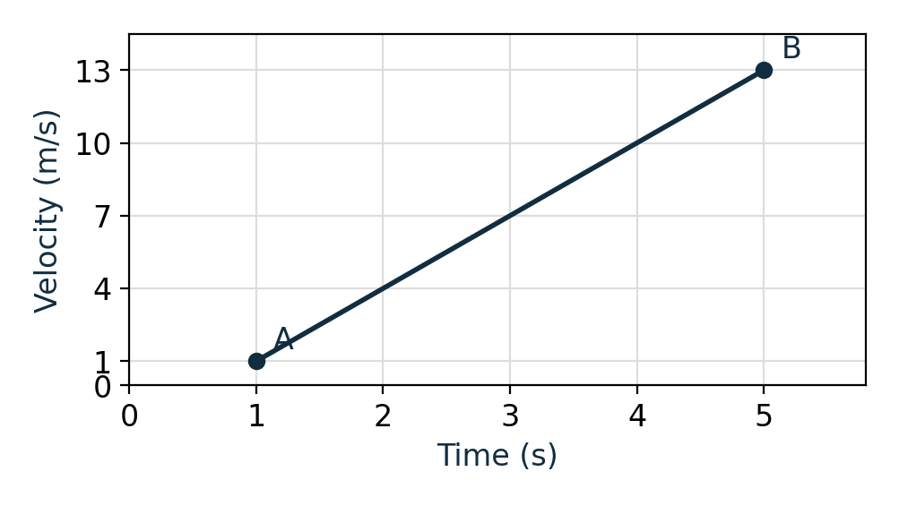
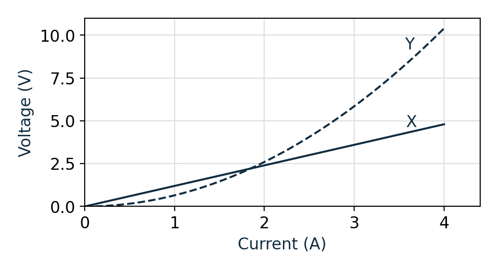
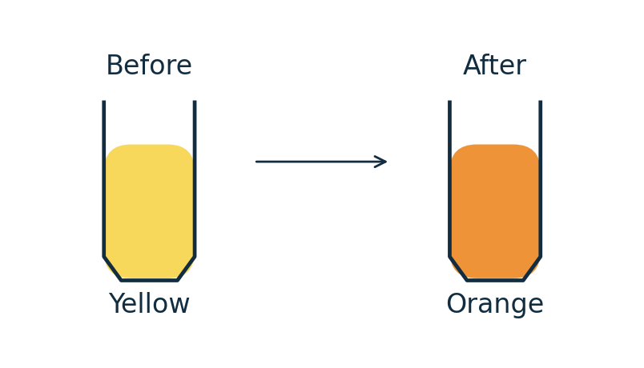
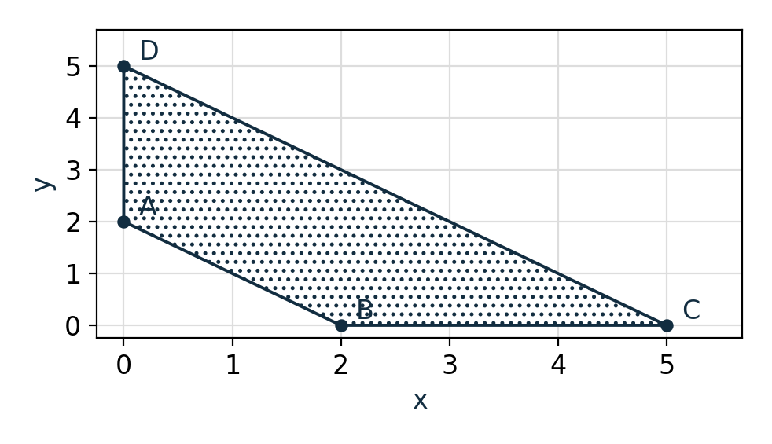
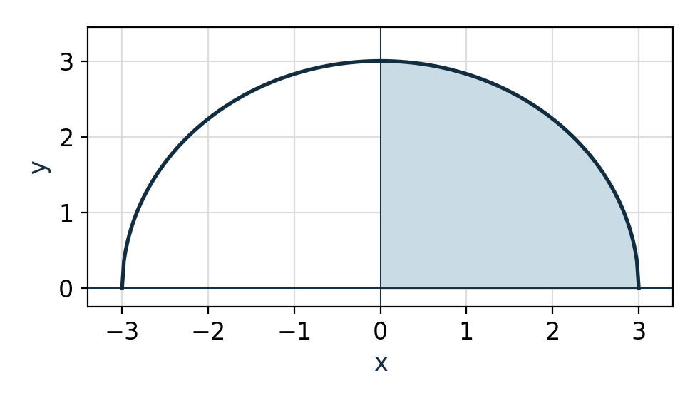

COMEDK UGET Test 10
180 minutes · 180 questions · +1 per correct answer · No negative marking
Physics
Q001. Which two changes together preserve the north end of a long solenoid?
A) Reverse only the winding sense
B) Reverse only the current
C) Reverse the current and double its magnitude
D) Reverse the winding sense and the current
Worked solution
Answer: (D) Reverse the winding sense and the current
Why and working: The axial field sense follows circulation around the axis. Reversing winding and current reverses that circulation twice.
Why not the others: (A) one reversal swaps the ends. (B) current reversal alone swaps the ends. (C) magnitude does not restore the direction.
Q002. A velocity–time graph has the points A and B marked. What is the average acceleration from A to B and the displacement over that interval?

A) 3 m/s² and 24 m
B) 7 m/s² and 28 m
C) 3 m/s² and 28 m
D) 12 m/s² and 28 m
Worked solution
Answer: (C) 3 m/s² and 28 m
Why and working: Read A=(1 s,1 m/s) and B=(5 s,13 m/s). The slope is 12/4=3 and the trapezoidal area is (1+13)×4/2=28.
Why not the others: (A) ignores initial velocity in computing the area. (B) 7 is the mean velocity. (D) 12 m/s is the velocity change.
Q003. A flat loop lies in a uniform steady magnetic field. It slides within its own plane while remaining entirely in the field. What happens to its flux?
A) It increases because the loop is moving
B) It remains constant
C) It decreases at its trailing edge
D) It oscillates once per unit distance
Worked solution
Answer: (B) It remains constant
Why and working: Flux is B times area times the cosine of the fixed normal angle. None of these changes in a uniform region.
Why not the others: (A) translation alone does not alter the normal or area. (C) both edges remain in the same field. (D) there is no periodic change in the geometry.
Q004. A current is i=8 cos(ωt+π/3) A. Which rms value holds over a whole cycle?
A) 8 A
B) 4 A
C) 4√2 A
D) Zero
Worked solution
Answer: (C) 4√2 A
Why and working: Squaring gives a cycle average of 64/2. The starting phase does not affect a full-cycle average.
Why not the others: (A) this is the peak. (B) this divides by two instead of √2. (D) zero is the signed mean.
Q005. A target moves with constant velocity (2,−1) m/s from (0,6) m. An observer at (4,0) m moves vertically at 2 m/s. After how long are their horizontal coordinates equal and what is the target's y-coordinate then?
A) 2 s and 2 m
B) 2 s and 4 m
C) 3 s and 3 m
D) 4 s and 2 m
Worked solution
Answer: (B) 2 s and 4 m
Why and working: The observer keeps x=4, so 2t=4. The target's y is 6−t=4 m at t=2 s.
Why not the others: (A) uses the target's vertical displacement rather than position. (C) would put the target at x=6. (D) x would then be 8.
Q006. Between ideal capacitor plates the electric field falls linearly to zero over an interval t. What is true of displacement current during that interval?
A) It steadily falls with the magnitude of the field
B) It is zero while no charge crosses the gap
C) It is constant and points opposite the original field
D) It points along the original field because the field remains positive until the end
Worked solution
Answer: (C) It is constant and points opposite the original field
Why and working: The displacement current through a fixed parallel plate area is ε₀A dE/dt. For a linearly decreasing field the derivative is constant and negative.
Why not the others: (A) conflates the field with its derivative. (B) displacement current does not require carriers in the gap. (D) the sign is set by the derivative.
Q007. A convex mirror has focal length +15 cm and a real object stands 30 cm in front of it. What signed magnification follows?
A) −1/3
B) +1/2
C) +1/3
D) −2
Worked solution
Answer: (C) +1/3
Why and working: With u=−30 cm, 1/v=1/15+1/30=1/10, so v=+10 cm. Mirror magnification is −v/u=+1/3.
Why not the others: (A) the virtual image is upright. (B) the mirror equation gives v=10 cm. (D) the image is diminished.
Q008. A block is pressed horizontally against a vertical wall with force F. Its weight is W and μ_sF is larger than W. While it is at rest, how much friction acts?
A) W upward
B) μ_sF upward
C) W downward
D) Zero
Worked solution
Answer: (A) W upward
Why and working: Horizontal balance gives normal force F. Static friction can adjust up to μ_sF and balances the weight W vertically.
Why not the others: (B) this is the upper limit, not the required force. (C) this would reinforce weight. (D) without friction gravity would accelerate the block downward.
Q009. A point source emits a spherical wave. Two sufficiently small patches of its wavefront at equal radius are viewed far from the source. Why can each patch be approximated as plane locally?
A) The source becomes an infinite surface at large r
B) Its curvature changes direction only slightly across a small patch relative to the radius
C) Wavefront normals are everywhere parallel on the entire sphere
D) The wave speed vanishes as r increases
Worked solution
Answer: (B) Its curvature changes direction only slightly across a small patch relative to the radius
Why and working: A spherical surface has a well-defined tangent plane at every point. Across a patch much smaller than the radius, the normal changes little.
Why not the others: (A) the source does not change type. (C) normals differ across the entire sphere. (D) wave speed is set by the medium.
Q010. At equal frequency above threshold, two intensity settings produce two photocurrent curves. Both stop at −2 V. The brighter setting reaches a higher plateau. What does the comparison show?
A) Intensity changes kinetic energy but leaves the collection rate fixed
B) Intensity changes the emission rate while the maximum photoelectron kinetic energy remains the same
C) The same stopping voltage implies equal saturation currents
D) The work function equals the plateau current
Worked solution
Answer: (B) Intensity changes the emission rate while the maximum photoelectron kinetic energy remains the same
Why and working: Stopping voltage of equal magnitude gives equal K_max=eV_s. A higher saturation current means more collected electrons per unit time.
Why not the others: (A) the shared stopping point contradicts changing K_max. (C) the plateau heights are stated different. (D) energy and current have different units.
Q011. A 1 kg cart moving east at 5 m/s hits a 3 kg cart moving west at 1 m/s. The 1 kg cart rebounds west at 1 m/s. What is the final velocity of the heavier cart?
A) 1 m/s east
B) 1 m/s west
C) 2/3 m/s east
D) 2 m/s east
Worked solution
Answer: (A) 1 m/s east
Why and working: Take east positive. Initial p=5−3=2 kg·m/s. Final p=−1+3v, so 3v=3.
Why not the others: (B) reverses the direction. (C) omits the rebound momentum. (D) does not solve the momentum equation.
Q012. Which Rutherford observation shows that most of the atomic volume offers little resistance to alpha particles?
A) Every particle returns to the source
B) Every particle is captured by an orbital electron
C) Most particles pass almost straight through the foil
D) No transmitted particles are ever detected
Worked solution
Answer: (C) Most particles pass almost straight through the foil
Why and working: The overwhelming number of small deviations indicates that large deflecting fields occupy a small fraction of the atom.
Why not the others: (A) backscattering is rare. (B) capture is not the dominant outcome. (D) many particles are transmitted.
Q013. Why does nuclear binding not require a neutron to carry electric charge?
A) The short-range nuclear interaction acts between nucleons whether they are protons or neutrons
B) Neutrons become positively charged whenever they enter a nucleus
C) Gravity between nucleons dominates all ordinary nuclear binding
D) Only protons interact, so neutrons are spectators
Worked solution
Answer: (A) The short-range nuclear interaction acts between nucleons whether they are protons or neutrons
Why and working: The nuclear force can bind proton–neutron and neutron–neutron pairs as well as affect proton pairs. Neutrons do not need a Coulomb attraction.
Why not the others: (B) their electric charge stays zero. (C) gravity is negligible on this scale. (D) neutrons participate in binding.
Q014. In translational motion the impulse ∫F dt changes linear momentum. What is its fixed-axis rotational counterpart?
A) The time integral of angle changes torque
B) The time integral of net torque changes angular momentum
C) The time integral of moment of inertia changes angular speed
D) Power integrated over time changes angular momentum directly
Worked solution
Answer: (B) The time integral of net torque changes angular momentum
Why and working: The angular momentum equation is dL/dt=τ, so integrating gives angular impulse ΔL.
Why not the others: (A) angle is not the rate of change of angular momentum. (C) inertia alone is not angular impulse. (D) integrated power gives work.
Q015. Material X has a small band gap and material Y a much larger one. At the same moderate temperature both start with full valence bands in the zero-temperature limit. In which does thermal promotion of electrons into the conduction band generally occur more readily?
A) X, because less energy is needed to cross the gap
B) Y, because a wider gap always gives more carriers
C) Both equally because both valence bands begin full
D) Neither, because heat cannot create any mobile carriers
Worked solution
Answer: (A) X, because less energy is needed to cross the gap
Why and working: Thermal energy can promote a fraction of electrons across the gap. The smaller separation makes such excitation more probable.
Why not the others: (B) a wider gap makes excitation less likely. (C) finite-temperature occupation depends on gap size. (D) thermally created electron–hole pairs are possible.
Q016. Two positive charges +q at x=0 and +4q at x=3a act on a small positive test charge. At what x between them does the net force vanish?
A) a
B) 3a/2
C) 2a
D) a/2
Worked solution
Answer: (A) a
Why and working: Between the charges the forces oppose. Equality requires q/x²=4q/(3a−x)². Positive distances give 3a−x=2x, so x=a.
Why not the others: (B) at the midpoint the +4q force dominates. (C) this is nearer to the stronger charge. (D) the nearer +q becomes too strong there.
Q017. A satellite’s circular orbit speed doubles after it moves to another circular orbit around the same Earth. What is the new orbital radius relative to the old one?
A) One half
B) Twice
C) One quarter
D) Four times
Worked solution
Answer: (C) One quarter
Why and working: For a circular orbit v²=GM/r. Doubling v means r must be divided by four.
Why not the others: (A) forgets to square the speed ratio. (B) larger r lowers speed. (D) reverses the scaling.
Q018. On the axis of a dipole, two points are reflections of each other through the dipole centre. The dipole contribution to the potential is +V at one point. If a separate charge contributes +V at the reflected point, what is the total potential at the reflected point?
A) +2V
B) Zero
C) +V
D) −2V
Worked solution
Answer: (B) Zero
Why and working: Inversion about the dipole centre exchanges the distances to +q and −q. Thus its potential reverses to −V, and the additional +V cancels it.
Why not the others: (A) does not reverse the dipole contribution. (C) omits one term. (D) the added potential is positive.
Q019. A metal wire is drawn out to double its length without changing its volume or carrier density. In the new state carrier mobility is one quarter of its original value. If the same voltage is applied across the wire, what is the current ratio, new to old?
A) 1/8
B) 1/4
C) 1/16
D) 1/2
Worked solution
Answer: (C) 1/16
Why and working: The area halves at fixed volume, the field V/L halves, and v_d=μE falls by a factor eight. Multiplying by the area factor in I=neAv_d gives 1/16.
Why not the others: (A) omits the area factor. (B) uses only the mobility effect. (D) uses just one geometric change.
Q020. A soap film of two surfaces contracts from area A per surface to area A/2 per surface at constant tension S. What decrease in surface energy occurs?
A) SA/2
B) SA
C) 2SA
D) Zero
Worked solution
Answer: (B) SA
Why and working: Each surface loses area A/2. Multiply the sum of the two changes by the tension to get SA.
Why not the others: (A) counts only one interface. (C) uses the entire original area of both surfaces. (D) contraction changes area.
Q021. At the centre of a circular current loop of radius R, two identical turns carry equal currents in opposite senses. What is their net field?
A) Twice the one-turn field
B) Zero
C) The one-turn field
D) A tangential field of the same magnitude as one turn
Worked solution
Answer: (B) Zero
Why and working: Each axial contribution has magnitude μ₀I/(2R). Opposite circulation reverses the field, so the contributions cancel.
Why not the others: (A) would require matching circulation. (C) both turns contribute. (D) the centre field is axial.
Q022. A bar magnet’s moment points east. Two small compasses are placed on opposite ends of its equatorial line at equal distances. Neglect Earth’s field. What is true of their north-seeking directions?
A) Both point west
B) Both point east
C) One points east and the other west
D) Both point along that equatorial line
Worked solution
Answer: (A) Both point west
Why and working: At both equal equatorial points the dipole field opposes the magnet’s moment. The field is locally west at both points.
Why not the others: (B) that follows along the axial line. (C) this field does not switch under inversion of these positions. (D) field direction is parallel to the dipole axis at equatorial points.
Q023. A shiny radiation shield is inserted across a vacuum gap between hot and cold plates. Which mechanism is it intended to reduce?
A) Convection of gas circulating through the vacuum
B) Net thermal radiation across the gap
C) Direct conduction through stationary gas in the gap
D) Gravitational attraction between the plates
Worked solution
Answer: (B) Net thermal radiation across the gap
Why and working: Low-emissivity surfaces exchange thermal radiation weakly. In vacuum neither gas conduction nor bulk convection can carry the heat across the gap.
Why not the others: (A) vacuum has no circulating gas. (C) gas is absent in the stated gap. (D) gravity is not the heat-transfer mechanism.
Q024. A coil with 20 turns links flux 0.010 Wb per turn. The external flux per turn drops uniformly to zero in 0.50 s. If total resistance is 4 Ω, what is the induced current magnitude?
A) 0.40 A
B) 0.10 A
C) 0.005 A
D) 1.0 A
Worked solution
Answer: (B) 0.10 A
Why and working: The emf magnitude is 20×0.010/0.50=0.40 V. Divide by 4 Ω to obtain 0.10 A.
Why not the others: (A) this is the voltage value. (C) forgets the number of turns. (D) uses a wrong decimal factor.
Q025. A series circuit has reactances 10 Ω inductive and 4 Ω capacitive. With resistance 8 Ω, what ratio of reactance magnitude to impedance follows?
A) 3/4
B) 7/5
C) 3/5
D) 1/2
Worked solution
Answer: (C) 3/5
Why and working: Net reactance is 10−4=6 Ω and Z=√(8²+6²)=10 Ω. Their ratio is 6/10.
Why not the others: (A) compares reactance with resistance. (B) adds rather than subtracts the reactances. (D) does not use the correct net reactance.
Q026. A gas completes a cycle with +60 J of net work done on it. How much net heat is transferred and in which direction?
A) 60 J leaves the gas
B) 60 J enters the gas
C) No heat is transferred
D) 120 J leaves the gas
Worked solution
Answer: (A) 60 J leaves the gas
Why and working: The cycle returns U to its initial value. Using ΔU=Q+W_on gives Q=−60 J.
Why not the others: (B) reverses the heat sign. (C) zero U change does not imply zero heat. (D) only 60 J is needed to balance the work.
Q027. A transverse wave moves along a string at speed c. As it crosses a marked element, that element is instantaneously at its upper turning point. Which observation is compatible with propagation continuing at that instant?
A) Both the element and crest must stop
B) The element moves along the string at c
C) The element moves vertically at c because c sets every local speed
D) The element is momentarily still while the crest moves along the string at c
Worked solution
Answer: (D) The element is momentarily still while the crest moves along the string at c
Why and working: The local oscillator has momentarily zero transverse velocity at its extreme. The crest is a phase feature that continues moving horizontally.
Why not the others: (A) phase motion is distinct from element velocity. (B) the element oscillates transversely. (C) phase speed does not set the instantaneous transverse speed.
Q028. Two glass–air interfaces use glass X of index 1.25 and glass Y of index 1.50. A ray in each glass strikes its interface with sin i=3/4. Which ray undergoes total internal reflection?
A) The ray in X only
B) Both
C) Neither
D) The ray in Y only
Worked solution
Answer: (D) The ray in Y only
Why and working: Critical sines are 1/1.25=0.80 and 1/1.50=2/3. The given 0.75 is above the threshold for Y but below that for X.
Why not the others: (A) reverses the threshold comparison. (B) X is below its critical sine. (C) Y is above its critical sine.
Q029. Two tones beat at 3 Hz. One is 256 Hz and the other is known to be higher in frequency. What is the other tone?
A) 259 Hz
B) 253 Hz
C) 256 Hz
D) 768 Hz
Worked solution
Answer: (A) 259 Hz
Why and working: Beat frequency is the absolute frequency difference. The higher-frequency condition selects 256+3.
Why not the others: (B) would be lower. (C) would produce no beats. (D) multiplies the frequencies instead of adding the difference.
Q030. In Huygens’ picture of refraction from air into a slower transparent medium at oblique incidence, why does the wavefront turn?
A) The incident optical frequency must change at the boundary
B) Every secondary wavelet grows faster in the slower medium
C) The wavefront always stays parallel to its original direction across any interface
D) The parts already inside create wavelets of smaller radius over the same time than parts still outside
Worked solution
Answer: (D) The parts already inside create wavelets of smaller radius over the same time than parts still outside
Why and working: At oblique incidence the front crosses progressively. Unequal propagation distances in equal time rotate the common tangent wavefront.
Why not the others: (A) frequency is fixed by the source and boundary continuity. (B) radius equals speed times elapsed time. (C) different speeds change the front orientation at oblique incidence.
Q031. A metal has threshold frequency f₀. Illumination is changed from 2f₀ to 3f₀. What is the ratio of new to old stopping voltage magnitudes?
A) 3/2
B) 2
C) 3
D) 1
Worked solution
Answer: (B) 2
Why and working: The energies available for the fastest electrons are h(3f₀−f₀) and h(2f₀−f₀). Their ratio is 2, and e relates them to stopping voltages.
Why not the others: (A) uses incident photon energies without subtracting the threshold. (C) would apply to 4f₀ relative to 2f₀. (D) the excess energy changes.
Q032. A ball is projected horizontally at 8 m/s from a height of 20 m, with g=10 m/s² and no air drag. How far horizontally does it go before landing?
A) 16 m
B) 8 m
C) 32 m
D) 20 m
Worked solution
Answer: (A) 16 m
Why and working: Vertical drop 20=½gt² gives t=2 s. Horizontal speed stays 8 m/s, so range is 16 m.
Why not the others: (B) uses only one second. (C) uses t=4 from failing to take the root. (D) this is the vertical height.
Q033. For which hydrogen orbits is the radius of the higher orbit four times that of the lower orbit?
A) n=6 and n=3
B) n=5 and n=1
C) n=4 and n=1
D) n=3 and n=2
Worked solution
Answer: (A) n=6 and n=3
Why and working: Radii scale as n². A fourfold radius requires the principal numbers to differ by a factor two.
Why not the others: (B) ratio of principal numbers is five. (C) ratio of radii is sixteen. (D) ratio of radii is 9/4.
Q034. The product nucleus in a reaction has rest mass 0.006 u below the initial total. One emitted particle carries 1.862 MeV kinetic energy. If all remaining released energy goes to one other particle, what kinetic energy does that particle get? Use 931 MeV per u.
A) 5.586 MeV
B) 1.862 MeV
C) 7.448 MeV
D) 3.724 MeV
Worked solution
Answer: (D) 3.724 MeV
Why and working: The mass decrease releases 0.006×931=5.586 MeV. Subtract the first particle’s kinetic energy to leave 3.724 MeV.
Why not the others: (A) this gives the entire release. (B) this is the first particle’s energy. (C) adding violates the released-energy budget.
Q035. Why can a loaded trolley be harder to move if its wheels are locked, even though the total normal force has not changed?
A) Locked wheels remove the ground’s normal reaction
B) Rolling keeps the contact patch sliding at full trolley speed
C) Lubricated bearings eliminate gravity when unlocked
D) Sliding replaces rolling, and its resisting force is commonly larger
Worked solution
Answer: (D) Sliding replaces rolling, and its resisting force is commonly larger
Why and working: A freely rolling wheel has nearly stationary contact relative to the ground at the instant of contact. A locked wheel slides and dissipates more energy on a typical surface.
Why not the others: (A) the load still needs vertical support. (B) this describes sliding. (C) lubrication does not alter gravity.
Q036. At equal temperature, a p-type semiconductor has hole concentration much larger than its electron concentration. What can still be true about its entire electrically neutral bulk?
A) Ionised acceptors balance the excess mobile positive charge
B) The bulk must have a large net positive charge equal to all hole charge
C) There are no immobile charges anywhere
D) Holes are negative and balance positive donors
Worked solution
Answer: (A) Ionised acceptors balance the excess mobile positive charge
Why and working: Acceptor atoms that gain electrons become fixed negative ions. These help balance the larger mobile hole population.
Why not the others: (B) charge balance includes the dopant ions. (C) ionised lattice impurities are present. (D) holes are positive and acceptors are the relevant dopants.
Q037. A circular wire of radius R has linear charge density 2λ on its upper semicircle and −λ on its lower semicircle, with λ positive. How much charge must be added uniformly to the lower half alone to make the total vanish?
A) +πλR
B) −2πλR
C) Zero
D) −πλR
Worked solution
Answer: (D) −πλR
Why and working: Each half has length πR. The original total is 2λπR−λπR=λπR, so adding its negative makes the total zero.
Why not the others: (A) would increase the total. (B) would give a negative residual. (C) the original charges do not cancel.
Q038. Two equal-mass trolleys collide and stick on a smooth plane. Their initial momentum vectors are equal in magnitude and perpendicular. What is the final direction?
A) Along the first trolley’s direction only
B) Opposite to the internal bisector
C) Along the internal bisector of the two initial directions
D) They stop because the momenta are perpendicular
Worked solution
Answer: (C) Along the internal bisector of the two initial directions
Why and working: Momentum is the vector sum. Equal perpendicular components yield a diagonal pointing between them.
Why not the others: (A) both components survive. (B) there is no sign reversal. (D) only opposite equal momenta cancel.
Q039. A charged particle is moved quasistatically around a polygon whose vertices have the same potential, although the edges leave the equipotential surface. What is the total electrostatic work along any edge?
A) Zero
B) Nonzero whenever an edge leaves the surface
C) Positive for every directed edge
D) It must depend on traversal speed
Worked solution
Answer: (A) Zero
Why and working: Electrostatic work depends on the endpoints' potential difference. Equal endpoint values make the line integral vanish even if force does work locally.
Why not the others: (B) positive and negative local contributions can cancel. (C) there is no net endpoint drop. (D) electrostatic work has no speed dependence.
Q040. On the plotted V–I diagram, which sample satisfies a constant resistance over the range shown?

A) Sample Y only
B) Both because both pass through the origin
C) Neither because both have positive slopes
D) Sample X only
Worked solution
Answer: (D) Sample X only
Why and working: The plotted V against I for X is a straight line through zero. Its slope is fixed, while the V/I ratio changes along Y.
Why not the others: (A) Y is nonlinear. (B) passing through the origin does not fix the slope. (C) a positive constant slope is an ohmic resistance.
Q041. Two rotors have the same mass M. Their moments of inertia about their working axes are I and 9I. How do their radii of gyration compare?
A) The second is three times the first even if their outer radii match
B) The second is nine times the first
C) The radii of gyration must agree because the masses are equal
D) The first is three times the second
Worked solution
Answer: (A) The second is three times the first even if their outer radii match
Why and working: Equation I=Mk² applies about each working axis. At fixed mass, a factor nine in inertia corresponds to a factor three in radius of gyration.
Why not the others: (B) radius is a square root of the inertia ratio. (C) mass alone cannot fix the distribution. (D) larger inertia gives larger k.
Q042. An infinite wire carries current I. A square Amperian path encloses it once. Is the line integral around the square generally the same as that around an enclosing circle of the same orientation?
A) No, because the magnetic field is tangent to every side of the square
B) No, because the integral is proportional to path perimeter for any shape
C) Yes, because both enclose the same signed current
D) Yes only if electric charge density along the wire vanishes
Worked solution
Answer: (C) Yes, because both enclose the same signed current
Why and working: Ampère’s law fixes the closed line integral by the signed enclosed current. Constant tangential field on each path is unnecessary.
Why not the others: (A) the field is not everywhere tangent to the square. (B) the tangential component varies around the square. (D) the law refers to steady current, not vanishing charge.
Q043. A small magnetic dipole initially makes 45° with a uniform field. Without changing its moment, what change in the field direction makes its initial torque vanish?
A) Make the field perpendicular to the axis
B) Turn the field until it lies along either sense of the dipole axis
C) Keep the field’s direction while only doubling its magnitude
D) Turn the field through any 90° in the page regardless of the axis
Worked solution
Answer: (B) Turn the field until it lies along either sense of the dipole axis
Why and working: Torque is m×B, which vanishes for parallel or antiparallel directions.
Why not the others: (A) perpendicular gives the largest torque. (C) doubling B scales a nonzero torque. (D) a 90° turn need not make the axes collinear.
Q044. A clean tube produces a capillary rise in a wetting liquid. Replacing the walls with a coating that gives a contact angle of 90° changes the ideal rise to what?
A) Twice the original rise
B) Zero
C) The previous value regardless of angle
D) A largest possible depression
Worked solution
Answer: (B) Zero
Why and working: Capillary height has factor cosθ. At 90° this factor vanishes for otherwise unchanged conditions.
Why not the others: (A) the vertical tension component disappears. (C) contact angle matters. (D) depression requires a negative cosine.
Q045. An outward magnetic flux through a conducting loop is initially positive and falling. It crosses zero and continues decreasing at the same signed rate. What changes about the induced current sense exactly as the flux crosses zero?
A) The sense reverses because the flux sign changes
B) The current stays zero on both sides
C) The current reverses only if the loop resistance is positive
D) The sense is unchanged
Worked solution
Answer: (D) The sense is unchanged
Why and working: Faraday’s law depends on the derivative rather than the flux value. The signed derivative is unchanged through the crossing.
Why not the others: (A) the flux sign is not the derivative sign. (B) a nonzero derivative induces emf. (C) resistance does not require a sign change.
Q046. For a series RC circuit with finite R and C, how does the current phase lead change as the frequency becomes very large?
A) It approaches 180°
B) It approaches zero
C) It becomes a 90° lag
D) It stays exactly 90° at all frequencies
Worked solution
Answer: (B) It approaches zero
Why and working: At high frequency X_C=1/(ωC) becomes small relative to R. The circuit approaches its resistive, in-phase limit.
Why not the others: (A) the voltage and current are not oppositely phased. (C) a capacitor gives a lead, not an inductive lag. (D) the lead angle depends on X_C/R.
Q047. For otherwise identical blackbodies, the hotter one peaks at which wavelength compared with the cooler one?
A) A longer wavelength
B) The very same wavelength
C) No finite wavelength at all
D) A shorter wavelength
Worked solution
Answer: (D) A shorter wavelength
Why and working: Wien’s displacement law gives λ_max T constant. Higher absolute temperature moves the peak to shorter wavelengths.
Why not the others: (A) uses direct rather than inverse dependence. (B) the peak position changes with temperature. (C) each finite positive temperature has a finite peak.
Q048. Which electromagnetic band is used in an ordinary television remote employing a near-infrared LED?
A) Ultraviolet
B) Gamma radiation
C) X-rays
D) Infrared
Worked solution
Answer: (D) Infrared
Why and working: An infrared LED emits at wavelengths just beyond the red visible range, which a compatible receiver detects.
Why not the others: (A) ultraviolet lies beyond violet. (B) gamma energies are much larger. (C) X-rays are not the stated LED band.
Q049. A ray stays within the straight core of an optical fibre. Which interface property and incidence condition are needed for that guiding mechanism?
A) Core index higher than cladding and incidence above the critical angle measured from the normal
B) Cladding index higher than core and incidence above a critical angle from the normal
C) Core index higher than cladding and incidence below the critical angle
D) Equal indices and incidence exactly normal
Worked solution
Answer: (A) Core index higher than cladding and incidence above the critical angle measured from the normal
Why and working: Total internal reflection requires travel toward lower index and incidence beyond the critical threshold.
Why not the others: (B) this reverses the index ordering. (C) below threshold there is transmission. (D) equal indices do not guide by reflection.
Q050. A wheel spins uniformly. A point on its rim sweeps an angle π/3 during a time interval. Another point at half its radius sweeps what angle and arc length relative to the rim point?
A) Half the angle, same arc length
B) Same angle, same arc length
C) Same angle, half the arc length
D) Double the angle, half the arc length
Worked solution
Answer: (C) Same angle, half the arc length
Why and working: All points rotate through the same angle on a rigid wheel. Arc length equals rθ, so halving radius halves linear displacement along the arc.
Why not the others: (A) radius affects the arc rather than the angle. (B) the radii differ. (D) one rigid wheel has one angular displacement.
Q051. Two coherent, in-phase waves arrive at a point with amplitudes 3a and a. What becomes the ratio of resultant intensity if one beam’s phase is flipped by π, compared to the original intensity?
A) 1/2
B) 1/16
C) Zero
D) 1/4
Worked solution
Answer: (D) 1/4
Why and working: The original amplitude is 4a and the final amplitude is 2a. Their intensity ratio is (2/4)²=1/4.
Why not the others: (A) this is the amplitude ratio. (B) uses final amplitude a instead of 2a. (C) unequal opposing amplitudes do not cancel completely.
Q052. One photon has energy sufficient to match the combined energy of three photons each of wavelength λ. What is the single photon’s wavelength in vacuum?
A) 3λ
B) λ
C) λ/3
D) λ/9
Worked solution
Answer: (C) λ/3
Why and working: Each original photon has energy hc/λ. Matching three requires hc/λ′=3hc/λ, giving λ′=λ/3.
Why not the others: (A) higher energy means shorter wavelength. (B) would match only one of the photons. (D) only one inverse factor of three is required.
Q053. A car travels around a level curve of radius 50 m at 15 m/s. What minimum coefficient of static friction is required on a level dry model road with g=10 m/s²?
A) 0.30
B) 0.90
C) 4.5
D) 0.45
Worked solution
Answer: (D) 0.45
Why and working: Static friction must supply mv²/r. Require μmg≥mv²/r, so μ≥225/(50×10)=0.45.
Why not the others: (A) treats speed linearly. (B) adds an unwarranted factor of two. (C) omits the acceleration scale g.
Q054. A hydrogen electron’s orbital kinetic energy in the Bohr model is K at n=2. What are its orbital kinetic energy and speed at n=4 relative to their n=2 values?
A) K/2 and half the speed
B) K/4 and one quarter the speed
C) K/4 and half the speed
D) 4K and twice the speed
Worked solution
Answer: (C) K/4 and half the speed
Why and working: Bohr orbital speed scales as 1/n. Doubling n halves speed and quarters the kinetic energy ½mv².
Why not the others: (A) uses linear scaling for energy. (B) the speed changes by one power of n. (D) the higher orbit is slower.
Q055. On the ordinary binding energy per nucleon curve, where is the broad maximum?
A) At a single separated proton
B) Toward the largest possible mass number only
C) Around intermediate-mass nuclei in the iron region
D) At zero mass number
Worked solution
Answer: (C) Around intermediate-mass nuclei in the iron region
Why and working: Intermediate mass nuclei have among the largest binding energies per nucleon. Very light and very heavy nuclei lie lower on the curve.
Why not the others: (A) one separated proton has no nuclear binding energy. (B) the curve declines gently for heavy nuclei. (D) zero nucleons do not define a per-nucleon energy.
Q056. Which object has greater moment of inertia about the central axis normal to its plane: a uniform disc or a thin ring of the same mass and radius?
A) The disc, because it has more material in the interior
B) They have equal inertia because their masses and outer radii match
C) Neither has any inertia about that axis
D) The ring, because its mass is concentrated farther from the axis
Worked solution
Answer: (D) The ring, because its mass is concentrated farther from the axis
Why and working: The ring has MR²; the disc has MR²/2. Mass closer to the axis contributes less by the squared distance weighting.
Why not the others: (A) placing mass in the interior lowers I. (B) mass distribution also matters. (C) both resist angular acceleration.
Q057. Which current remains in an ordinary p–n junction under moderate reverse bias in the simple model?
A) A large majority-carrier diffusion current as in forward bias
B) A current of only stationary lattice ions moving across
C) No current under any reverse-bias condition whatsoever
D) A small minority-carrier current
Worked solution
Answer: (D) A small minority-carrier current
Why and working: Reverse bias suppresses majority-carrier injection. Thermally available minority carriers can still be swept across the junction.
Why not the others: (A) large majority injection is characteristic of forward bias. (B) the lattice ions are fixed. (C) small leakage is possible even before breakdown.
Q058. From a smooth equipotential arrangement, which way does a nonzero electrostatic field point across the surfaces?
A) From lower to higher potential along the local normal
B) Along a tangent toward the point of highest potential on one surface
C) From higher to lower potential along the local normal
D) Along any direction because potential is a scalar
Worked solution
Answer: (C) From higher to lower potential along the local normal
Why and working: The field is minus the spatial gradient of potential, so the normal component points to decreasing potential. No tangent component can exist on a smooth constant-potential surface.
Why not the others: (A) the negative gradient reverses the direction. (B) the potential is constant along that surface. (D) the spatial gradient determines a direction.
Q059. One spherical liquid drop separates into eight equal spherical drops without losing volume. Each small radius is r. What is the ratio of the small-drop excess pressure to the original drop's excess pressure?
A) 8
B) 2
C) 4
D) 1/2
Worked solution
Answer: (B) 2
Why and working: Equal volume gives original radius 2r, since eight r³ equal (2r)³. For a liquid drop ΔP=2S/r, so the smaller drop has double the excess pressure.
Why not the others: (A) applies the number of drops directly. (C) uses a square instead of inverse-radius scaling. (D) reverses the pressure ratio.
Q060. Charges +q, +q and −q occupy three corners of an equilateral triangle of side a. What work must an external agent do to take the negative charge to infinity, leaving the positive ones fixed?
A) +2kq²/a
B) +kq²/a
C) −2kq²/a
D) Zero
Worked solution
Answer: (A) +2kq²/a
Why and working: Only the two pairs involving −q change. Each goes from −kq²/a to zero, so external quasistatic work equals an increase of 2kq²/a.
Why not the others: (B) counts only one attractive pair. (C) this is the sign of the reverse process. (D) the two attractions add energetically.
Chemistry
Q061. An ideal solution contains 90 g water and 18 g of a nonvolatile nonelectrolyte of molar mass 60 g/mol. What fraction of pure water's vapour pressure is lost? Treat water as 18 g/mol.
A) 3/53
B) 1/6
C) 3/50
D) 50/53
Worked solution
Answer: (A) 3/53
Why and working: Water contributes 5 mol and solute 0.30 mol. The pressure lowering fraction is x_solute=0.30/5.30=3/53.
Why not the others: (B) uses mass ratio instead of mole fraction. (C) divides by solvent moles alone. (D) this is the remaining pressure fraction.
Q062. Which pair has the same neutron number but differs in both proton and mass numbers?
A) ³⁵Cl and ³⁷Cl
B) ²³Na and ²⁴Mg
C) ⁴⁰Ar and ⁴⁰Ca
D) ¹²C and ¹⁴C
Worked solution
Answer: (B) ²³Na and ²⁴Mg
Why and working: Na has 23−11=12 neutrons and Mg has 24−12=12. Both Z and A differ.
Why not the others: (A) chlorine isotopes have different neutron counts. (C) these isobars differ in neutron number. (D) carbon isotopes differ in neutron count.
Q063. At infinite dilution, which relation describes the molar conductivity of CaCl₂?
A) 2λ°(Ca²⁺)+λ°(Cl⁻)
B) λ°(Ca²⁺)+2λ°(Cl⁻)
C) λ°(Ca²⁺)−2λ°(Cl⁻)
D) λ°(Ca²⁺)×λ°(Cl⁻)
Worked solution
Answer: (B) λ°(Ca²⁺)+2λ°(Cl⁻)
Why and working: Independent migration gives one calcium and two chloride contributions per formula unit. Contributions to conductivity add regardless of charge sign.
Why not the others: (A) reverses stoichiometry. (C) negative ions still carry electrical current. (D) Kohlrausch’s law is additive.
Q064. A zero-order reaction reaches one half of its starting concentration in 20 min. It is repeated at half that starting concentration with the same rate constant. What is the new half-life?
A) 20 min
B) 40 min
C) 5 min
D) 10 min
Worked solution
Answer: (D) 10 min
Why and working: For zero order t_half=[A]₀/(2k). Halving [A]₀ halves the half-life.
Why not the others: (A) first-order half-life has this invariance. (B) reverses the dependence. (C) reduces it by a factor of four.
Q065. Sulfur and selenium lie in the same main group. Which modern explanation accounts for chemical similarities even though their periods differ?
A) They have the same pattern of outer-shell occupation, ns²np⁴
B) They have the same number of occupied shells
C) Their nuclei have equal proton numbers
D) They each have exactly two valence electrons
Worked solution
Answer: (A) They have the same pattern of outer-shell occupation, ns²np⁴
Why and working: The group repeats a six-valence-electron pattern across successive principal shells. Similar outer configurations underlie periodic chemistry.
Why not the others: (B) different periods have different outer n. (C) different elements have different Z. (D) four p electrons also count.
Q066. Why are many transition-metal interstitial compounds still conducting after incorporation of small atoms?
A) Small atoms necessarily replace every metal centre
B) The metal framework and its mobile electrons can persist
C) All metal electrons become attached to positively charged nuclei with no mobile states
D) Interstitial sites exist only in solution
Worked solution
Answer: (B) The metal framework and its mobile electrons can persist
Why and working: Interstitial atoms sit among host atoms. Even with changes to hardness and composition, a metallic conduction framework can remain.
Why not the others: (A) this is not substitutional replacement. (C) occupation does not automatically destroy metallic conduction. (D) interstices are present in solids.
Q067. Which feature of octahedral crystal-field splitting explains why orbitals with lobes between ligand directions are lower than those directed at the ligands?
A) They are forbidden from containing electrons
B) They contain neutrons that make them heavier
C) They have larger repulsion and hence lower energy
D) They encounter less electrostatic repulsion from the ligand electron density
Worked solution
Answer: (D) They encounter less electrostatic repulsion from the ligand electron density
Why and working: Ligands approach along the axes in an octahedron. Orbitals pointing between axes experience a smaller rise in energy.
Why not the others: (A) all five d orbitals may be occupied. (B) electrons occupy the orbitals. (C) repulsion raises rather than lowers energy.
Q068. Which change distinguishes forming Cl₂ from two chlorine atoms from forming the ions that make NaCl?
A) Both cases need two Cl nuclei to merge
B) The NaCl lattice is held only by one isolated shared Cl–Cl pair
C) Cl₂ involves a shared pair, while NaCl contains electrostatically bound oppositely charged ions
D) Cl₂ forms by producing two chloride ions of the same charge
Worked solution
Answer: (C) Cl₂ involves a shared pair, while NaCl contains electrostatically bound oppositely charged ions
Why and working: The equal chlorine atoms share a pair in a covalent bond. Sodium and chloride provide opposite ionic charges in the salt.
Why not the others: (A) bond formation does not merge nuclei. (B) a sodium chloride lattice has no Cl₂ bond as its framework. (D) two Cl⁻ ions do not constitute neutral Cl₂.
Q069. When a halogen attached to benzene directs further substitution chiefly ortho or para, how does the usual total nitration rate compare with benzene itself?
A) It is higher because every ortho director activates strongly
B) It is lower even though the orientation is ortho or para
C) It cannot differ because the ring contains six carbons in both cases
D) It is infinite because halogen leaves immediately
Worked solution
Answer: (B) It is lower even though the orientation is ortho or para
Why and working: A ring halogen withdraws inductively and deactivates it, while lone-pair resonance still favours ortho and para intermediates over meta.
Why not the others: (A) orientation and overall activation are distinct. (C) substitution changes ring electron distribution. (D) nothing makes the rate infinite.
Q070. Why is ethanol used in many formulations as a carrier for organic fragrances that mix poorly with pure water?
A) Its ethyl group is fully ionic and insoluble in all organic liquids
B) It removes all fragrance molecules by obligatory oxidation
C) A single ethanol molecule is an iron-containing complex
D) Its hydroxyl group interacts with water and its ethyl group interacts with organic material
Worked solution
Answer: (D) Its hydroxyl group interacts with water and its ethyl group interacts with organic material
Why and working: Ethanol has a polar OH group and a small nonpolar hydrocarbon portion, making it useful as an organic cosolvent.
Why not the others: (A) the ethyl group is covalent. (B) solvation need not involve chemical reaction. (C) ethanol contains only C, H and O.
Q071. An insulated closed gas sample is compressed by surroundings doing 125 J of work on it. Use the chemistry sign convention. What are q, w and ΔU?
A) 0, +125 J, +125 J
B) +125 J, 0, +125 J
C) 0, −125 J, −125 J
D) 0, +125 J, zero
Worked solution
Answer: (A) 0, +125 J, +125 J
Why and working: Insulation gives q=0. Compression work on the system is positive and ΔU=q+w=125 J.
Why not the others: (B) insulation prevents heat transfer. (C) the sign is positive for work on the system. (D) the energy change equals the work.
Q072. In butanal, how many α-hydrogens can be removed from the α-carbon in the usual structural count?
A) One
B) Three
C) Zero
D) Two
Worked solution
Answer: (D) Two
Why and working: The α-carbon is the CH₂ bonded directly to CHO. Its two hydrogens are α-hydrogens.
Why not the others: (A) the formyl H is not an α-hydrogen. (B) the terminal methyl is farther from the carbonyl. (C) butanal has an α-carbon bearing H.
Q073. In forming benzenediazonium chloride from aniline with nitrous acid under conventional cold conditions, what changes at the carbon bonded to nitrogen?
A) The carbon is oxidised to CO₂ and leaves benzene
B) An alkyl ethyl group replaces all nitrogen atoms
C) The aromatic ring is completely hydrogenated
D) Its −NH₂ group is converted to a −N₂⁺ diazonium group
Worked solution
Answer: (D) Its −NH₂ group is converted to a −N₂⁺ diazonium group
Why and working: Diazotisation converts the primary aromatic amino group into the corresponding arenediazonium group. The aromatic carbon stays in the ring.
Why not the others: (A) the ring framework is retained. (B) the product still contains nitrogen. (C) the product remains aromatic.
Q074. For N₂O₄(g) ⇌ 2NO₂(g), the concentration-based equilibrium expression is which of the following?
A) [NO₂]/[N₂O₄]²
B) 2[NO₂]/[N₂O₄]
C) [NO₂]²/[N₂O₄]
D) [N₂O₄]/[NO₂]²
Worked solution
Answer: (C) [NO₂]²/[N₂O₄]
Why and working: Equilibrium activities appear with powers given by the balanced coefficients. The forward equation gives NO₂ in the numerator squared.
Why not the others: (A) the powers are exchanged. (B) the coefficient becomes an exponent. (D) this is the reverse expression.
Q075. Why can glycogen support rapid release of glucose units in animals?
A) Its entire structure consists of separate free glucose molecules
B) It already contains dissolved ATP as every repeat unit
C) Its chains are entirely β(1→4)-linked cellulose
D) Its branched structure provides many ends for enzymes to act on
Worked solution
Answer: (D) Its branched structure provides many ends for enzymes to act on
Why and working: Several nonreducing ends can be accessed at once. Branches therefore help support rapid mobilisation.
Why not the others: (A) glycogen is a glucose polymer. (B) ATP is not its repeat unit. (C) its chains have α linkages.
Q076. Solutions X and Y of the same solvent have equal mass-based molality. X contains a non-dissociating solute and Y has fully dissociated NaCl. What is ΔT_f,Y/ΔT_f,X in the ideal dilute model?
A) 1/2
B) 2
C) 1
D) 4
Worked solution
Answer: (B) 2
Why and working: Use ΔT_f=iK_fm. Solvent and m agree, and complete NaCl dissociation produces two ions per formula unit.
Why not the others: (A) inverts the ion count. (C) ignores dissociation. (D) NaCl does not give four ions.
Q077. In Fe₃O₄, assuming all oxygen is −2, what is the average formal oxidation number of iron?
A) +2
B) +8/3
C) +3
D) −8/3
Worked solution
Answer: (B) +8/3
Why and working: Four oxygens contribute −8. The three iron atoms contribute +8 in total, for mean +8/3.
Why not the others: (A) some Fe can be +2 but that is not the average. (C) this would give a total of +9. (D) reverses the sign needed for neutrality.
Q078. A total charge of 0.30 F passes through a solution of M³⁺. Only 80% of it deposits metal. How many moles of M are deposited?
A) 0.10 mol
B) 0.24 mol
C) 0.72 mol
D) 0.080 mol
Worked solution
Answer: (D) 0.080 mol
Why and working: Depositing charge is 0.80×0.30=0.24 mol electrons. Divide by three electrons per M³⁺ to obtain 0.080 mol.
Why not the others: (A) assumes all the charge deposits M. (B) reports electron moles. (C) multiplies instead of divides by the charge number.
Q079. A collision model considers two reactions with equal activation energy and identical thermal collision-energy distributions. Reaction X is faster at the same encounter frequency. What feature could account for the difference?
A) Higher energy distribution for X despite the stated same distribution
B) A universal activation threshold of zero only for X
C) A larger fraction of collisions has effective orientation for X
D) Collisions are entirely absent for X
Worked solution
Answer: (C) A larger fraction of collisions has effective orientation for X
Why and working: The model counts only collisions with both sufficient energy and suitable alignment. With energy and encounter statistics held fixed, orientation can still differ.
Why not the others: (A) the energy distributions are fixed equal. (B) the activation energies are given equal. (D) a reaction governed by this model needs encounters.
Q080. What does a violet ring in the usual Molisch test indicate in elementary qualitative analysis?
A) Presence of a carbohydrate or a substance yielding carbohydrate units
B) Presence of elemental iron only
C) Presence of halide ions only
D) Complete absence of organic material
Worked solution
Answer: (A) Presence of a carbohydrate or a substance yielding carbohydrate units
Why and working: Sugar-derived dehydration products can condense with the test reagent to give the characteristic colour.
Why not the others: (B) the colour is not an iron test. (C) halide analysis relies on different reactions. (D) carbohydrates are organic substances.
Q081. The diagram shows the same chromium-containing solution before and after a reagent is added. From the colour change, what happens to the predominant ion and the formal oxidation state of chromium?

A) The mixture shifts toward dichromate, with chromium reduced to +3
B) The mixture shifts toward chromate, with chromium becoming +7
C) The mixture shifts toward dichromate, with chromium remaining +6
D) Metallic chromium forms, so the final chromium state is zero
Worked solution
Answer: (C) The mixture shifts toward dichromate, with chromium remaining +6
Why and working: Yellow denotes the usual chromate form and orange denotes dichromate. For either CrO₄²⁻ or Cr₂O₇²⁻, the oxygen and charge balance makes each chromium formally +6. The conversion is an equilibrium shift rather than a reduction.
Why not the others: (A) the dichromate chromium state is +6. (B) orange indicates the dichromate side. (D) changing acid–base conditions alone does not deposit metal.
Q082. Which kind of stereoisomerism can distinguish two complexes that have identical donor attachments but are nonsuperimposable mirror images?
A) Linkage isomerism
B) Ionisation isomerism
C) Optical isomerism
D) No isomerism if all donor attachments agree
Worked solution
Answer: (C) Optical isomerism
Why and working: Enantiomers have the same connectivity but different spatial arrangements related as nonsuperimposable mirror images.
Why not the others: (A) linkage changes the donor atom used. (B) ionisation isomers change counterion versus ligand identity. (D) identical bonds do not ensure spatial superposability.
Q083. Among C₆H₁₄ constitutional isomers, which listed name represents a molecule having two methyl branches on the same carbon of its longest chain?
A) 2,3-dimethylbutane
B) 3-methylpentane
C) Hexane
D) 2,2-dimethylbutane
Worked solution
Answer: (D) 2,2-dimethylbutane
Why and working: Both methyl locants are 2 in 2,2-dimethylbutane. Its longest continuous chain contains four carbons.
Why not the others: (A) its branch locants differ. (B) has only one branch. (C) is unbranched.
Q084. Which listed halo compound has no hydrogen atoms and was widely called carbon tetrachloride?
A) CHCl₃
B) CH₂Cl₂
C) CHI₃
D) CCl₄
Worked solution
Answer: (D) CCl₄
Why and working: Carbon tetrachloride has four chlorine atoms around carbon. All four hydrogens of methane are replaced.
Why not the others: (A) chloroform retains one H. (B) dichloromethane retains two H. (C) iodoform retains one H.
Q085. What is the IUPAC name for OH at carbon 1 and CH₃ at carbon 3 of a benzene ring using phenol as the parent?
A) 2-methylphenol
B) 4-methylphenol
C) Phenylmethanol
D) 3-methylphenol
Worked solution
Answer: (D) 3-methylphenol
Why and working: OH sets the parent phenol ring position as 1. A methyl group two ring bonds away receives locant 3.
Why not the others: (A) is the ortho isomer. (B) is the para isomer. (C) has OH on a side-chain carbon.
Q086. Which description of a flask containing only CO₂ gas is correct?
A) It contains molecules made of two elements but is a single compound
B) It contains three different elements per molecule
C) It is a mixture of separate carbon and oxygen elements
D) It contains free carbon atoms with no molecules
Worked solution
Answer: (A) It contains molecules made of two elements but is a single compound
Why and working: Each molecule has one carbon and two oxygen atoms in fixed proportion. A pure sample is one compound.
Why not the others: (B) there are three atoms, but only two elements. (C) atoms are chemically bonded in the molecules. (D) the carbon is in CO₂.
Q087. An organic laboratory needs a small polar liquid that evaporates readily and is a common ketone solvent. Which substance fits, and what distinguishes it from an aldehyde?
A) Ethanal, with its carbonyl bonded to one H and one C
B) Acetic acid, because COOH is a ketone group
C) Acetone, with its carbonyl carbon bonded to two carbons
D) Methanal, with two alkyl groups attached to its carbonyl
Worked solution
Answer: (C) Acetone, with its carbonyl carbon bonded to two carbons
Why and working: Acetone is propanone, CH₃COCH₃, a volatile solvent. Its carbonyl is internal, between two methyl groups.
Why not the others: (A) the described structure is an aldehyde. (B) a carboxyl group has an attached OH. (D) methanal’s carbonyl carbon is attached to two H.
Q088. A linear tetrapeptide is hydrolysed completely. How many molecules of water are consumed per tetrapeptide in cleaving its peptide bonds?
A) Three
B) Four
C) Two
D) One
Worked solution
Answer: (A) Three
Why and working: Four residues form a chain with three peptide links. Each amide hydrolysis consumes one water molecule per link.
Why not the others: (B) counts residues instead of peptide bonds. (C) cleaves only two of the three links. (D) counts the chain as a single bond.
Q089. Which finding could be explained by Rutherford’s picture with a compact nucleus but not by Thomson’s diffuse positive charge model?
A) A solid foil can contain electrons
B) Both positive and negative charges occur in atomic matter
C) A small fraction of alpha particles is deflected through very large angles
D) Most alpha particles travel forward after entering a thin foil
Worked solution
Answer: (C) A small fraction of alpha particles is deflected through very large angles
Why and working: A compact positive charge can exert a strong repulsive impulse on a passing positive alpha particle at small impact parameter.
Why not the others: (A) the Thomson model also included electrons. (B) both pictures included opposing charges. (D) forward passage alone does not distinguish the models.
Q090. Two dilute ideal solutions have the same osmotic pressure and effective particle molarity. If one is cooled without changing its volume materially, what happens to its osmotic pressure?
A) It rises
B) It falls
C) It remains unchanged
D) It must become negative
Worked solution
Answer: (B) It falls
Why and working: The van’t Hoff equation gives π=c_eff RT. Fixed effective concentration makes pressure proportional to absolute temperature.
Why not the others: (A) cooling reduces T. (C) equal original values do not keep one fixed on cooling. (D) positive absolute temperature and concentration give positive π.
Q091. What feature of an ordinary discharging dry cell distinguishes it from a powered electrolytic cell?
A) It must consume electrical energy from an external source to discharge
B) Its spontaneous redox chemistry supplies electric energy to an external circuit
C) Its cathode must be the site of oxidation
D) Charges are transferred without any chemical changes at the electrodes
Worked solution
Answer: (B) Its spontaneous redox chemistry supplies electric energy to an external circuit
Why and working: A dry cell at discharge is a galvanic cell. Its chemical reaction can drive current; electrolysis requires an external source to drive nonspontaneous chemistry.
Why not the others: (A) this describes electrolysis or recharge rather than discharge. (C) the cathode is the reduction site. (D) a galvanic cell uses coupled redox changes.
Q092. For Cl and Cl⁻, which usually has the larger radius in the textbook atomic-versus-ionic comparison?
A) Cl, since its nucleus has more protons
B) Cl⁻, since an extra electron is added with the same nuclear charge
C) They are equal because their nuclei are identical
D) Cl⁻, since gaining an electron removes an entire shell
Worked solution
Answer: (B) Cl⁻, since an extra electron is added with the same nuclear charge
Why and working: The added electron increases electron repulsion and typically expands the cloud at fixed Z. The chloride ion is larger.
Why not the others: (A) they have the same proton number. (C) nuclear identity does not fix electronic radius. (D) gaining an electron does not remove a shell.
Q093. Two reactions have the same pre-exponential factor and temperature. The second has lower E_a by RT ln 4. What is k_second/k_first?
A) 4
B) 1/4
C) 2
D) ln 4
Worked solution
Answer: (A) 4
Why and working: The ratio is exp[(E_a,first−E_a,second)/(RT)]=exp(ln 4)=4.
Why not the others: (B) reverses the Arrhenius sign. (C) a square root is not involved. (D) the exponential undoes ln.
Q094. In strongly alkaline conditions a permanganate ion is reduced by one electron. Which formula has the correct resulting Mn–O composition and charge?
A) MnO₄⁺
B) MnO₄⁻
C) MnO₄²⁻
D) MnO₂⁻
Worked solution
Answer: (C) MnO₄²⁻
Why and working: Addition of one electron changes the charge from −1 to −2. In this conversion the four oxygens remain attached and Mn becomes +6.
Why not the others: (A) the charge becomes more negative. (B) this is the starting species. (D) the manganate model retains four oxygens.
Q095. Which molecule has a permanent net dipole because its bent shape prevents polar bond dipoles from cancelling?
A) CO₂
B) H₂O
C) BF₃
D) CCl₄
Worked solution
Answer: (B) H₂O
Why and working: The O–H bonds are polar and meet at an angle. Their vector sum along the angle bisector is nonzero.
Why not the others: (A) linear equal opposite bond dipoles cancel. (C) three equal vectors cancel in trigonal planar geometry. (D) four identical tetrahedral terms sum to zero.
Q096. Why can a metal ion bound at the active site of a protein have a different reactivity from the same free aqueous ion?
A) Coordinating donor atoms change its local electronic environment and access to substrates
B) The protein changes the metal’s atomic number
C) All ligand binding makes the metal completely nonreactive
D) The metal can no longer interact with any electrons after binding
Worked solution
Answer: (A) Coordinating donor atoms change its local electronic environment and access to substrates
Why and working: Ligands modify electron distribution and available coordination sites. This can tune metal-centred reactivity without changing elemental identity.
Why not the others: (B) the nucleus is not altered by coordination. (C) some binding environments support catalysis. (D) coordinative interactions involve electrons.
Q097. Which uses the resonance explanation for phenol acidity correctly?
A) The OH in phenol has no hydrogen
B) Phenoxide has no conjugation with the ring
C) Phenoxide can spread negative charge over the ring and oxygen
D) Phenol is strong because every molecule is fully ionised in water
Worked solution
Answer: (C) Phenoxide can spread negative charge over the ring and oxygen
Why and working: Loss of H⁺ gives phenoxide. Its lone-pair and ring π interactions permit multiple contributors, stabilising the conjugate base.
Why not the others: (A) there is an O–H bond. (B) adjacent aromatic π orbitals permit overlap. (D) phenol remains a weak acid.
Q098. Which quantity is intensive for a uniform sample?
A) Total volume
B) Total internal energy
C) Density
D) Total mass
Worked solution
Answer: (C) Density
Why and working: Density equals mass divided by volume. Both scale in the same proportion when a homogeneous sample is duplicated, so the ratio does not.
Why not the others: (A) volume scales with amount. (B) energy scales with sample size. (D) mass is extensive.
Q099. Which is the correct name and qualitative acidity relation for FCH₂COOH versus CH₃COOH?
A) Fluoroethanoic acid is stronger than ethanoic acid
B) Methanoic acid is weaker than ethanoic acid
C) Fluoroethanoic acid is weaker than ethanoic acid
D) Fluoroethanoic acid and ethanoic acid are identical in acidity
Worked solution
Answer: (A) Fluoroethanoic acid is stronger than ethanoic acid
Why and working: The acid skeleton has two carbons. Fluorine withdraws inductively and stabilises the negative conjugate base relative to ethanoic acid.
Why not the others: (B) the fluorinated acid has two carbons. (C) withdrawal favours ionisation rather than impeding it. (D) changing the substituent affects stabilization.
Q100. Two folded protein subunits assemble without changing their internal helices or amino acid sequences. What new structural description applies to the assembly?
A) Every peptide bond is created only at this stage
B) The primary sequences must become identical
C) The assembly changes secondary structure by definition
D) A quaternary arrangement emerges from the placement of the subunits relative to each other
Worked solution
Answer: (D) A quaternary arrangement emerges from the placement of the subunits relative to each other
Why and working: Quaternary structure describes arrangement of multiple polypeptide chains together. The problem holds each subunit’s internal motifs and sequence fixed.
Why not the others: (A) the individual chains already had peptide bonds. (B) different chains can form an assembly. (C) a new arrangement among chains need not change helices.
Q101. For a gaseous equilibrium with four gas molecules on the reactant side and two on the product side, what does compression at constant temperature favour qualitatively?
A) The reactant side
B) Neither side for every possible system
C) The product side
D) The side with the faster catalyst
Worked solution
Answer: (C) The product side
Why and working: The pressure increase from compression favours the side with fewer gas molecules under the ideal qualitative model.
Why not the others: (A) four molecules take the higher-count side. (B) gas mole counts differ. (D) a catalyst does not shift equilibrium.
Q102. A molecular solute partially associates. The measured van’t Hoff factor is i=0.70. What can be concluded in the simple particle-count interpretation?
A) Fewer effective solute particles are present than the analytical formula-unit amount
B) Each formula unit must have produced more than one free ion on average
C) There is no change in effective particle count
D) The apparent molar mass must be smaller than the true monomer molar mass
Worked solution
Answer: (A) Fewer effective solute particles are present than the analytical formula-unit amount
Why and working: An i below one means particle count is reduced by association. A fixed mass divided by fewer apparent moles gives a larger apparent mass.
Why not the others: (B) dissociation raises i. (C) no count change would give i=1. (D) the reduced count makes inferred mass larger.
Q103. During lead accumulator discharge, which change happens to the oxidation states of lead on the two electrodes as lead sulfate forms?
A) Both forms are oxidised to Pb(VI)
B) Pb metal is oxidised and Pb(IV) in PbO₂ is reduced, both to Pb(II)
C) Both forms are reduced to metallic lead
D) Pb metal is reduced and Pb(IV) is oxidised as PbSO₄ forms
Worked solution
Answer: (B) Pb metal is oxidised and Pb(IV) in PbO₂ is reduced, both to Pb(II)
Why and working: PbSO₄ contains Pb(II). Starting Pb metal moves from zero to +2, whereas PbO₂ contains lead at +4 and moves down to +2.
Why not the others: (A) neither product is Pb(VI). (C) the product contains ionic Pb(II). (D) the directions of the changes are reversed.
Q104. In acidic solution, Cr₂O₇²⁻ is reduced to 2Cr³⁺. After adding 7H₂O to the product side, what H⁺ and electron coefficients are required on the reactant side?
A) 14H⁺ and 6e⁻
B) 7H⁺ and 6e⁻
C) 14H⁺ and 3e⁻
D) 7H⁺ and 12e⁻
Worked solution
Answer: (A) 14H⁺ and 6e⁻
Why and working: Seven waters require 14 H atoms from H⁺. The left charge before the electrons is +12 while the two Cr³⁺ total +6. Add six electrons to match.
Why not the others: (B) seven protons leave H unbalanced. (C) three electrons do not balance the charge or both Cr atoms. (D) neither coefficient fits the balances.
Q105. Which oxidation state gives Yb a filled 4f¹⁴ subshell after it loses the two outer 6s electrons from [Xe]4f¹⁴6s²?
A) +3
B) +4
C) −2
D) +2
Worked solution
Answer: (D) +2
Why and working: Removing the stated two electrons leaves [Xe]4f¹⁴ and charge +2. A further loss would alter that filled-shell arrangement in this model.
Why not the others: (A) would require one more loss. (B) would require two additional losses. (C) electron loss gives positive charge.
Q106. Which common use is associated with condensation products of phenol and formaldehyde?
A) Production of table salt from seawater
B) Preparation of liquid hydrogen fuel by filtration
C) Direct production of oxygen gas from a metal carbonate
D) Thermosetting phenolic resin manufacture
Worked solution
Answer: (D) Thermosetting phenolic resin manufacture
Why and working: Condensation can link phenolic rings through carbon bridges and produce a crosslinked thermosetting material.
Why not the others: (A) salt recovery is unrelated. (B) filtration cannot create hydrogen. (C) phenolic condensation does not use a metal carbonate.
Q107. A 0.22 g sample gives 0.44 g CO₂ on complete combustion. Using C=12 and O=16, what is the sample’s carbon mass percentage?
A) About 54.5%
B) About 27.3%
C) 200%
D) About 12.0%
Worked solution
Answer: (A) About 54.5%
Why and working: Each 44 g CO₂ contains 12 g carbon. The measured 0.44 g therefore contains 0.12 g C, which is 0.12/0.22≈54.5%.
Why not the others: (B) halves the correct carbon contribution. (C) uses CO₂ mass instead of carbon mass. (D) confuses mass in grams with a percent.
Q108. A carboxylic acid is converted to its methyl ester with methanol under acid catalysis. What functional-group change identifies the ester?
A) The carbonyl oxygen is removed and the original acid group stays
B) The acid’s −OH part is replaced by −OCH₃ while the carbonyl is retained
C) The acid gains a new primary amine group
D) The acid loses every oxygen atom
Worked solution
Answer: (B) The acid’s −OH part is replaced by −OCH₃ while the carbonyl is retained
Why and working: Fischer esterification replaces the acid OH with the alcohol-derived methoxy group in the acyl product, giving RCOOCH₃.
Why not the others: (A) the ester still contains a carbonyl. (C) no nitrogen source is involved. (D) the ester still contains two O atoms.
Q109. An enzyme’s activity decreases at a very high temperature even though molecular collisions become faster. Why can both observations be true?
A) Thermal energy always slows molecules down
B) Heating destroys Avogadro’s number
C) Every collision is necessarily catalysed at high temperature
D) Denaturation can reduce the population with a functional active-site shape
Worked solution
Answer: (D) Denaturation can reduce the population with a functional active-site shape
Why and working: Although collision rates can rise, heat can unfold an enzyme and disturb the shape needed to bind and catalyse its substrate.
Why not the others: (A) thermal speeds generally rise. (B) the counting constant does not change. (C) loss of active fold makes encounters less productive.
Q110. In a Newman projection of ethane, aligning each rear C–H bond exactly behind a front C–H bond gives which conformation?
A) Eclipsed
B) Staggered
C) An alkene
D) A planar ring
Worked solution
Answer: (A) Eclipsed
Why and working: Exact overlap in projection corresponds to zero dihedral offset and an eclipsed arrangement.
Why not the others: (B) staggering offsets the rear bonds by 60°. (C) the C–C bond is still single. (D) no ring is formed by rotation.
Q111. Why can a patch of exposed iron rust faster if electrically connected to copper in moist air?
A) Copper supplies electrons by corroding first and always protects iron
B) The contact completely shuts off electronic conduction
C) Copper can support cathodic reduction while iron acts as the anodic metal
D) Iron becomes a noble cathode while solid water is the sacrificial metal
Worked solution
Answer: (C) Copper can support cathodic reduction while iron acts as the anodic metal
Why and working: Copper is more noble than iron. A moist electrolyte and electrical contact can let iron dissolve anodically while other reductions occur at copper.
Why not the others: (A) this would fit a more active sacrificial metal like zinc. (B) contact supports electron flow. (D) water is not the sacrificial metal.
Q112. What effect of lanthanoid contraction can complicate separation of adjacent lanthanoid ions?
A) They have unrelated oxidation states and completely different solubilities in every case
B) Adjacent ions have identical nuclear charge
C) Their similar trivalent ionic sizes give closely similar solution chemistry
D) The contraction destroys all coordination ability across the series
Worked solution
Answer: (C) Their similar trivalent ionic sizes give closely similar solution chemistry
Why and working: The change in radius between neighbours is gradual. In their common +3 state, the similarity makes selective chemical separation challenging.
Why not the others: (A) the +3 state is common. (B) one more proton distinguishes adjacent elements. (D) the ions can still form complexes.
Q113. A 50:50 mixture of two isotopes of element X has masses 10 u and 12 u. Under a simplified molecular model with random independent pairing, what is the mean mass of an X₂ molecule?
A) 22 u
B) 11 u
C) 20 u
D) 24 u
Worked solution
Answer: (A) 22 u
Why and working: The mean atomic mass is (10+12)/2=11 u. Each molecule contains two draws with that mean, so its mean mass is 22 u.
Why not the others: (B) this is per atom. (C) would require all light isotopes. (D) would require all heavy isotopes.
Q114. A symmetrical ether has four carbons in total, and both sides of oxygen are identical unbranched alkyl groups. Which compound is it?
A) 1-methoxypropane
B) Ethoxyethane
C) Butan-1-ol
D) Methoxymethane
Worked solution
Answer: (B) Ethoxyethane
Why and working: Equality of the groups divides the four carbons into two ethyl units joined by oxygen.
Why not the others: (A) methyl and propyl differ. (C) an alcohol contains OH instead of two carbon groups on O. (D) this ether contains only two carbons.
Q115. What best describes a hormone as used in elementary physiology?
A) A digestive catalyst that must hydrolyse proteins
B) A chemical messenger that regulates responses in receptive cells
C) A structural fibre found only in plant walls
D) A fuel molecule defined solely by how much energy it releases
Worked solution
Answer: (B) A chemical messenger that regulates responses in receptive cells
Why and working: Hormones communicate physiological signals, often at low concentration, to cells equipped with suitable receptors.
Why not the others: (A) catalysis is not the definition. (C) cell-wall fibres are structural. (D) signalling, rather than caloric value, is characteristic.
Q116. What does the elementary Bohr model explain for hydrogen but generally fail to predict on its own for many-electron atoms?
A) Discrete spectral lines from quantised energy differences in hydrogen, without accurately capturing interacting electrons in larger atoms
B) Equal spacing of every measured hydrogen line and all molecular bands
C) A continuous spectrum with no definite transition energies
D) The absence of electrons outside the nucleus
Worked solution
Answer: (A) Discrete spectral lines from quantised energy differences in hydrogen, without accurately capturing interacting electrons in larger atoms
Why and working: Bohr's energy levels account for key hydrogen frequencies. Multiple interacting electrons require a more complete treatment.
Why not the others: (B) hydrogen lines are not all equally spaced. (C) allowed transitions are discrete. (D) the model has orbiting electrons.
Q117. Why must the oxidation-state and periodic-trend chemistry of actinoids be studied with radioactive samples, whereas most lanthanoids can be studied with stable isotopes?
A) All naturally occurring lanthanoids contain no neutrons
B) Actinoid radioactivity requires each ion to have charge +5
C) All actinoids lack stable isotopes, whereas most lanthanoids have at least one
D) All actinoids become stable merely by losing valence electrons
Worked solution
Answer: (C) All actinoids lack stable isotopes, whereas most lanthanoids have at least one
Why and working: Ordinary valence changes leave nuclear stability essentially unchanged. The actinoid series has no stable isotope.
Why not the others: (A) lanthanoid nuclei contain neutrons. (B) radioactivity is a nuclear property, not one fixed ionic charge. (D) ionisation does not generally make radioactive nuclei stable.
Q118. Which vitamin deficiency is associated with rickets in children through disrupted mineral balance in bones?
A) Vitamin C
B) Vitamin D
C) Vitamin K
D) Vitamin B₁
Worked solution
Answer: (B) Vitamin D
Why and working: Vitamin D supports normal calcium and phosphate metabolism. Its deficiency can impair mineralisation in growing bone.
Why not the others: (A) C deficiency is associated with scurvy. (C) K chiefly supports normal coagulation. (D) B₁ deficiency has other characteristic effects.
Q119. Which comparison between first ionisation enthalpy and first electron-gain enthalpy of a gaseous neutral atom is valid?
A) Both mean adding a proton to the nucleus
B) Electron gain always costs more energy than ionisation
C) Ionisation requires removing an electron, while electron gain may release or require energy depending on the atom
D) Removing a gaseous electron is always exothermic
Worked solution
Answer: (C) Ionisation requires removing an electron, while electron gain may release or require energy depending on the atom
Why and working: First ionisation removes a bound electron and requires energy. Electron addition into a new orbital environment can have either sign.
Why not the others: (A) both processes change electrons rather than protons. (B) no general magnitude ordering applies. (D) separating a bound electron requires energy.
Q120. An isolated strand uses A, U, C and G and carries one phosphate group per nucleotide unit in a backbone model. Which alternate observation would instead support assignment to ordinary DNA?
A) Finding uracil and ribose in the backbone
B) Finding phosphate linkages between sugar units alone
C) Finding C and G in the strand with no information about its sugar
D) Finding thymine paired with adenine on the opposite strand and deoxyribose in the backbone
Worked solution
Answer: (D) Finding thymine paired with adenine on the opposite strand and deoxyribose in the backbone
Why and working: DNA uses deoxyribose and thymine in its conventional structure. The shared phosphate architecture and cytosine/guanine do not distinguish the two polymers.
Why not the others: (A) this is characteristic of RNA. (B) both backbones include phosphate. (C) both can contain C and G.
Mathematics
Q121. For f(x)=x²+x and g(x)=x²−x, which real combination af+bg equals 8x−2x² identically?
A) a=−5, b=3
B) a=4, b=−4
C) a=3, b=−5
D) a=3, b=5
Worked solution
Answer: (C) a=3, b=−5
Why and working: Matching coefficients gives a+b=−2 and a−b=8. Adding gives a=3 and then b=−5.
Why not the others: (A) reverses the linear term. (B) omits the quadratic coefficient. (D) gives the wrong sum.
Q122. An infinite GP with real common ratio has a nonzero first term a. Its sum is equal to a/2. Which statement holds?
A) The ratio is −1/2
B) No convergent GP satisfies this
C) The ratio is 1/2
D) The ratio is zero
Worked solution
Answer: (B) No convergent GP satisfies this
Why and working: For convergence the ratio must satisfy −1<r<1. Solving a/(1−r)=a/2 gives r=−1, excluded since terms then alternate without vanishing.
Why not the others: (A) r=−1/2 gives sum 2a/3. (C) r=1/2 gives sum 2a. (D) zero ratio gives the first term.
Q123. A line has direction (−1,0,0) and a second has direction (1,1,0). The directed vectors make an obtuse angle. What is the smaller angle between the lines?
A) 45°
B) 90°
C) 60°
D) 0°
Worked solution
Answer: (A) 45°
Why and working: The directed dot product is −1 and the norm product is √2. For the smaller angle between lines, take the magnitude of their cosine, 1/√2, which gives 45°.
Why not the others: (B) would require a zero dot product. (C) cosine is 1/√2 rather than 1/2. (D) not parallel.
Q124. The graph shows feasible vertices A, B, C and D. Which vertex uniquely minimises 3x+2y?

A) B
B) C
C) D
D) A
Worked solution
Answer: (D) A
Why and working: From the plot A=(0,2), B=(2,0), C=(5,0), D=(0,5). Their values are 4,6,15,10. The smallest is 4.
Why not the others: (A) B gives six. (B) C gives fifteen. (C) D gives ten.
Q125. What condition must k satisfy for (0,k) to be exactly 2 units from the line 3x+4y−8=0?
A) k=1/2 or 9/2
B) k=2 only
C) k=−2 or 2
D) k=−1/2 or 9/2
Worked solution
Answer: (D) k=−1/2 or 9/2
Why and working: The point-to-line distance is the absolute value of 4k−8 divided by 5. Setting it to two gives 4k−8=±10, hence the two stated values.
Why not the others: (A) the negative branch gives −1/2. (B) this point lies on the line. (C) the line has a nonzero intercept.
Q126. Of all units, 1/4 come from A and 3/4 from B. Defect rates are 12% in A and 4% in B. Given a defective unit, what is P(A)?
A) 1/4
B) 3/4
C) 1/2
D) 1/3
Worked solution
Answer: (C) 1/2
Why and working: The joint defective proportions are 0.25×0.12=0.03 and 0.75×0.04=0.03. Dividing A’s share by 0.06 gives one half.
Why not the others: (A) uses the source prior. (B) larger volume alone does not decide the posterior. (D) uses defect likelihoods without the source weights.
Q127. For A=[[1,2],[0,1]] and column v=(3,−1)ᵀ, what is Av?
A) (3,5)ᵀ
B) (5,−1)ᵀ
C) (3,−1)ᵀ
D) (1,−1)ᵀ
Worked solution
Answer: (D) (1,−1)ᵀ
Why and working: Row–column products give 1×3+2×(−1)=1 and 0×3+1×(−1)=−1.
Why not the others: (A) corresponds to Aᵀv. (B) drops the negative sign in the first dot product. (C) ignores the upper off-diagonal entry.
Q128. Which hyperbola has foci on the y-axis and vertices at (0,±3), with its conjugate semiaxis length 2?
A) x²/9−y²/4=1
B) y²/4−x²/9=1
C) y²/9+x²/4=1
D) y²/9−x²/4=1
Worked solution
Answer: (D) y²/9−x²/4=1
Why and working: The positive squared term is on the transverse y-axis. Vertex distance 3 gives denominator 9; conjugate semiaxis 2 gives denominator 4.
Why not the others: (A) opens in the x direction. (B) puts the vertices at y=±2. (C) has an ellipse signature.
Q129. Let A have rows (1,1,0),(0,1,0),(0,0,2). Solve Ax=(5,2,6)ᵀ.
A) (5,2,6)ᵀ
B) (7,2,3)ᵀ
C) (3,2,12)ᵀ
D) (3,2,3)ᵀ
Worked solution
Answer: (D) (3,2,3)ᵀ
Why and working: The third diagonal value gives z=3. The second row gives y=2 and the first gives x=5−2=3. Equivalently the inverse has first row (1,−1,0) and third diagonal entry 1/2.
Why not the others: (A) copies b rather than solving. (B) adds the second component rather than subtracting. (C) multiplies the third datum by two.
Q130. If y=(x+1)²/(x−1)³ with x>1, where is y′/y equal to zero?
A) At x=5
B) At x=2
C) Nowhere in x>1
D) At every x>1
Worked solution
Answer: (C) Nowhere in x>1
Why and working: The logarithm gives y′/y=2/(x+1)−3/(x−1)=[−x−5]/[(x+1)(x−1)]. Its only algebraic root is −5, outside the domain.
Why not the others: (A) the sign of the numerator’s root is negative. (B) the numerator at 2 is negative. (D) the ratio is strictly negative in the domain.
Q131. For y=(x²−1)/x with x≠0, what is y′ at x=2?
A) 3/4
B) 1/4
C) 5/4
D) 2
Worked solution
Answer: (C) 5/4
Why and working: Rewrite y=x−1/x before differentiating. Its derivative is 1+1/x². At 2 this is 5/4.
Why not the others: (A) uses the wrong derivative sign on −1/x. (B) omits the x term’s derivative. (D) ignores the quotient structure.
Q132. For positive a, what value does ∫ from −a/2 to a/2 of dx/√(a²−x²) have?
A) π/6
B) π/3
C) π/2
D) π
Worked solution
Answer: (B) π/3
Why and working: Substitute x=a sin θ. On the usual branch the radical cancels dx’s cosine factor. The angular bounds are −π/6 and +π/6, giving π/3.
Why not the others: (A) uses only one half of the interval. (C) would correspond to another pair of angular limits. (D) this is the angular width over the whole interval from −a to a.
Q133. On y>0, solve dx/dy+2x/y=6y with x(1)=2.
A) x=3y²/2+1/(2y²)
B) x=3y²+1/y²
C) x=2y²
D) x=3y²/2−1/(2y²)
Worked solution
Answer: (A) x=3y²/2+1/(2y²)
Why and working: Multiplying by integrating factor y² gives (y²x)′=6y³. Hence y²x=3y⁴/2+C and x(1)=2 gives C=1/2.
Why not the others: (B) integrates with a wrong factor and misses the initial value. (C) substitution gives 8y instead of 6y. (D) its initial value is one.
Q134. For x≠−2, f(x)=(x²−4)/(x+2). Which polynomial equals f on its domain?
A) x+2
B) x−2
C) x²−4
D) x²+2
Worked solution
Answer: (B) x−2
Why and working: Factor the numerator into (x−2)(x+2). Cancelling the nonzero denominator gives x−2.
Why not the others: (A) this cancels the wrong factor. (C) still includes the denominator factor. (D) degree and values do not match.
Q135. A segment starts at A=(2,3). Its midpoint is (5,1) and its endpoint B is unknown. What is the point dividing AB internally in ratio 1:3 starting from A?
A) (7/2,2)
B) (5,1)
C) (8,−1)
D) (13/2,0)
Worked solution
Answer: (A) (7/2,2)
Why and working: The midpoint corresponds to half the displacement (3,−2). The quarter point uses half of that midpoint displacement, giving (2,3)+(3/2,−1).
Why not the others: (B) this is halfway along. (C) this is the far endpoint. (D) this is the three-quarter point.
Q136. For A=[[1,1],[0,0]], which nonzero vector v belongs to its zero-output set, thereby giving a nonzero matrix B with first column v and second column zero such that AB=O?
A) v=(1,−1)ᵀ
B) v=(1,1)ᵀ
C) v=(0,1)ᵀ
D) v=(2,−1)ᵀ
Worked solution
Answer: (A) v=(1,−1)ᵀ
Why and working: The first row of Av is the sum of the entries of v. Thus a nonzero vector with opposite entries gives zero and both product columns vanish.
Why not the others: (B) the entries sum to two. (C) the entries sum to one. (D) the entries also sum to one.
Q137. Simplify cos 4x−cos 2x.
A) −2 sin 3x sin x
B) 2 cos 3x cos x
C) 2 sin 3x sin x
D) −2 cos 3x sin x
Worked solution
Answer: (A) −2 sin 3x sin x
Why and working: The cosine difference identity gives −2 sin((4x+2x)/2) sin((4x−2x)/2).
Why not the others: (B) this is the cosine sum form. (C) drops the minus sign. (D) both factors in the difference are sines.
Q138. The curve x=t²−1, y=t³−3t has two parameter values at x=0. What is true of those two tangents?
A) They are both vertical
B) Both are horizontal at different points
C) One is horizontal and the other vertical
D) They have opposite nonzero slopes
Worked solution
Answer: (B) Both are horizontal at different points
Why and working: At x=0 the parameters are t=±1. Both give dy/dt=3t²−3=0 but dx/dt=2t≠0. Their y values are opposite and nonzero.
Why not the others: (A) the denominator of dy/dx does not vanish. (C) both parameter values give zero slope. (D) both slope numerators vanish.
Q139. Find an antiderivative of (2x−1)/(x²+4).
A) ln(x²+4)+½ arctan(x/2)+C
B) ln(x²+4)−½ arctan(x/2)+C
C) 2 ln(x²+4)−arctan(x/2)+C
D) ½ ln(x²+4)−2 arctan(x/2)+C
Worked solution
Answer: (B) ln(x²+4)−½ arctan(x/2)+C
Why and working: Split the terms. Integrating 2x/(x²+4) gives the log. Integrating −1/(x²+4) gives −½ arctan(x/2).
Why not the others: (A) the unit numerator term is negative. (C) doubles both required coefficients. (D) neither coefficient matches its derivative.
Q140. Two positive numbers have sum 18. What is the greatest possible product?
A) 36
B) 81
C) 90
D) 18
Worked solution
Answer: (B) 81
Why and working: By AM–GM, √(ab)≤(a+b)/2=9. Thus ab≤81 with equality at a=b=9.
Why not the others: (A) this is less than the attainable value. (C) exceeds the AM–GM upper bound. (D) this is the sum rather than product.
Q141. Two equal nonzero vectors u,v in magnitude have dot product equal to half the squared length of u. What is the angle between u−v and u+v?
A) 60°
B) 30°
C) 90°
D) 0°
Worked solution
Answer: (C) 90°
Why and working: Their dot product is (u−v)·(u+v)=∥u∥²−∥v∥²=0. The given u·v ensures neither vector sum nor difference is zero.
Why not the others: (A) the angle between u and v is not the asked angle. (B) the resulting dot product is zero. (D) both derived directions are nonzero and perpendicular.
Q142. Suppose B and C are both inverses of the same square matrix A. Which identity proves B=C?
A) B(AC)=(BA)C
B) B+C=A
C) AB+AC=O
D) BA and AC are both O
Worked solution
Answer: (A) B(AC)=(BA)C
Why and working: Both AC and BA equal I. Associativity converts the left side into B and the right side into C.
Why not the others: (B) matrix inverses are not characterised by addition. (C) both products are identity. (D) inverse products are I.
Q143. For y=x² cos x, what is y′ at x=π?
A) 2π
B) π²
C) Zero
D) −2π
Worked solution
Answer: (D) −2π
Why and working: Product differentiation gives 2x cos x−x² sin x. At π the sine term vanishes and cosine is −1.
Why not the others: (A) uses the wrong cosine sign. (B) does not evaluate the product derivative. (C) the first term survives.
Q144. For y=x²eˣ, calculate y″(0).
A) 0
B) 1
C) 4
D) 2
Worked solution
Answer: (D) 2
Why and working: First y′=eˣ(x²+2x). Then y″=eˣ(x²+4x+2) by the product rule. At zero the constant term gives two.
Why not the others: (A) y and y′ vanish there but y″ does not. (B) the surviving coefficient is the second derivative of x² at zero. (C) four is the coefficient of x in the second derivative polynomial.
Q145. The graph shows an upper semicircle and a shaded region from x=0 to the right intercept. What is the integral of the plotted height over the shaded interval?

A) 9π/4
B) 9π/2
C) 3π/4
D) 9/2
Worked solution
Answer: (A) 9π/4
Why and working: The marked region is one quarter of a disk of radius 3, with area π·3²/4.
Why not the others: (B) counts the full upper half. (C) uses radius rather than radius squared. (D) treats the curved region as a triangle.
Q146. For real x, what is sgn(floor x) at x=−0.2?
A) −1
B) 0
C) +1
D) −0.2
Worked solution
Answer: (A) −1
Why and working: The greatest integer at most −0.2 is −1. Its sign is −1.
Why not the others: (B) rounding toward zero is not the floor. (C) the floor is negative. (D) signum does not return the original value.
Q147. Two vectors u and v span a triangle of area 6 when used as sides from one vertex. The second side is changed to 3v−2u. What is the area of the new triangle?
A) 6
B) 18
C) 12
D) 30
Worked solution
Answer: (B) 18
Why and working: Bilinearity gives u×(3v−2u)=3u×v, since u×u=0. The new half cross-product magnitude triples.
Why not the others: (A) the coefficient of v is three. (C) the parallel component does not contribute its coefficient to area. (D) does not add coefficients of unequal geometric contributions.
Q148. For continuous f let G(x)=∫₀ˣ f(t)dt. The value f(4)=0 is known. What conclusion follows at x=4?
A) G(4)=0 and G′(4) need not exist
B) Both G(4) and G′(4) must be four
C) The lower limit forces G to be constant
D) G′(4)=0, while G(4) is not fixed by the given value
Worked solution
Answer: (D) G′(4)=0, while G(4) is not fixed by the given value
Why and working: The fundamental theorem gives G′(4)=f(4). The integral value depends on all values between zero and four.
Why not the others: (A) only the instantaneous accumulation rate is fixed. (B) the derivative equals zero. (C) the integrand can vary.
Q149. If cos θ=0 and sin θ=1, what is cos 2θ?
A) 0
B) 1
C) 2
D) −1
Worked solution
Answer: (D) −1
Why and working: Use cos 2θ=1−2sin²θ=1−2.
Why not the others: (A) this is cos θ. (B) would apply to integer full turns. (C) cosine cannot exceed one.
Q150. For continuous f, ∫₀⁴ f(x)dx=10. If f(x)=f(4−x) throughout [0,4], what is ∫₁³ f(x)dx when ∫₀¹ f(x)dx=2?
A) 8
B) 6
C) 4
D) 10
Worked solution
Answer: (B) 6
Why and working: By reflection the contribution on [3,4] equals that on [0,1], namely two. Removing both pieces from the total ten leaves six.
Why not the others: (A) subtracts just one outside part. (C) this is the sum of the two excluded parts. (D) includes the excluded subintervals.
Q151. On integers, xRy if x−y is divisible by 3. Which test gives transitivity?
A) The sum of two multiples of 3 is again a multiple of 3
B) Only 0 is divisible by 3
C) Changing the sign of a multiple makes it indivisible
D) Divisibility by 3 is lost when equal numbers are compared
Worked solution
Answer: (A) The sum of two multiples of 3 is again a multiple of 3
Why and working: If xRy and yRz then x−z=(x−y)+(y−z). Both summands are multiples of 3, so their sum qualifies.
Why not the others: (B) there are many integer multiples. (C) negating a multiple preserves divisibility. (D) a zero difference is divisible by 3.
Q152. Which horizontal asymptote does y=e^(−x)−2 approach as x→+∞?
A) y=−2
B) y=0
C) x=−2
D) y=2
Worked solution
Answer: (A) y=−2
Why and working: The factor e^(−x) tends to zero for large positive x. The vertical shift makes the horizontal limit −2.
Why not the others: (B) forgets the vertical shift. (C) this is a vertical line. (D) uses the opposite shift.
Q153. Which value is arccos(cos(5π/4))?
A) 5π/4
B) 3π/4
C) −3π/4
D) π/4
Worked solution
Answer: (B) 3π/4
Why and working: The principal arccos interval is [0,π]. The angle there with cosine −√2/2 is 3π/4.
Why not the others: (A) outside the principal range. (C) also outside the principal range. (D) has positive cosine.
Q154. Matrix A is 3×2 and matrix B is 2×3. Which statement about A=B is true?
A) It holds when corresponding diagonal entries match
B) It holds when all entries are zero
C) It is impossible regardless of their entries
D) It holds whenever both have six entries
Worked solution
Answer: (C) It is impossible regardless of their entries
Why and working: Equality requires matching orders as well as matching corresponding entries. Here each matrix has a position absent in the other.
Why not the others: (A) matching a few entries is insufficient. (B) zero matrices of different sizes are still distinct. (D) entry count alone is insufficient.
Q155. Let f(x)=1/x and g(x)=1/(x−1). Which inputs are excluded from the domain of f−g?
A) Only 0 is missing
B) Only 1 is missing
C) Both 0 and 1 are missing
D) No real number is missing
Worked solution
Answer: (C) Both 0 and 1 are missing
Why and working: The common denominator is x(x−1), and neither original function is defined at its own excluded point. There is no cancellation with the constant numerator.
Why not the others: (A) g also excludes 1. (B) f also excludes 0. (D) the denominator has two zeros.
Q156. A 3×3 matrix has rows (1,2,3),(2,4,6),(0,1,a). For what a is its determinant zero?
A) Only a=0
B) Every real a
C) Only a=3
D) No real a
Worked solution
Answer: (B) Every real a
Why and working: The second row is exactly twice the first for every a. A determinant with proportional rows vanishes regardless of the third row.
Why not the others: (A) the dependence holds for more than zero. (C) no special third entry is needed. (D) two proportional rows already ensure zero.
Q157. Which function is continuous at x=0 but has unequal finite one-sided derivatives?
A) f(x)=x²
B) f(x)=sin x
C) f(x)=abs(x)
D) f(x)=5
Worked solution
Answer: (C) f(x)=abs(x)
Why and working: Absolute value tends to zero but its slopes at zero are −1 and +1 on the two sides.
Why not the others: (A) both derivatives are zero at zero. (B) both derivatives are one. (D) both derivatives vanish.
Q158. Which pair of sets has exactly the same members?
A) {1,2,3} and {x in real numbers: 0<x<4}
B) {1,2,3} and {x in integers: 0<x<4}
C) {1,2,3} and {x in integers: 0≤x<4}
D) {1,2,3} and {x in integers: 1<x≤3}
Worked solution
Answer: (B) {1,2,3} and {x in integers: 0<x<4}
Why and working: Restricting x to integers in the two strict bounds gives exactly one, two and three.
Why not the others: (A) the real interval contains nonintegers. (C) the second set includes zero. (D) the second set excludes one.
Q159. A rectangle’s length and width are 8 and 4 cm. At that instant the length grows by 1 cm/s and width shrinks by 1 cm/s. What is the area’s rate of change?
A) −4 cm²/s
B) +4 cm²/s
C) Zero
D) −12 cm²/s
Worked solution
Answer: (A) −4 cm²/s
Why and working: Differentiate LW: A′=L′W+LW′=1×4+8×(−1)=−4.
Why not the others: (B) reverses the net sign. (C) opposite side rates do not cancel with unequal side lengths. (D) uses a negative rate for both sides.
Q160. If f′(x)=6x−4 and f(2)=1, what is f(0)?
A) +3
B) −4
C) 1
D) −3
Worked solution
Answer: (D) −3
Why and working: Integrate to f=3x²−4x+C. At x=2, f(2)=12−8+C=1, giving C=−3, which is f(0).
Why not the others: (A) uses the wrong sign when finding the constant. (B) drops the stated initial value. (C) uses f(2) instead of f(0).
Q161. A and B contain five and four distinct elements respectively. If two elements are shared, how many ordered pairs in A×B have identical first and second coordinates?
A) 9
B) 20
C) 4
D) 2
Worked solution
Answer: (D) 2
Why and working: A diagonal pair (z,z) exists only when z belongs to A∩B. Each shared element contributes exactly one such ordered pair.
Why not the others: (A) adds set sizes without checking equality. (B) counts every ordered pair. (C) each shared element gives just one pair.
Q162. For 0≤x≤4, compare the areas between y=x and y=2 and between y=2x and y=4. What is the second-to-first ratio?
A) 4
B) 1
C) 1/2
D) 2
Worked solution
Answer: (D) 2
Why and working: The second pair multiplies both y-values by two at every fixed x. The vertical distance, and therefore its integral over the same interval, doubles.
Why not the others: (A) only the vertical dimension is scaled. (B) the vertical gap does change. (C) the second gap is greater.
Q163. The equation (y″)³+(y′)⁵=x is polynomial in derivatives. What is its order and degree?
A) Order 3, degree 5
B) Order 5, degree 2
C) Order 2, degree 3
D) Order 2, degree 5
Worked solution
Answer: (C) Order 2, degree 3
Why and working: The highest derivative is y″, so the order is two. Its exponent three is the degree.
Why not the others: (A) treats exponents as derivative levels. (B) the fifth power belongs to the first derivative. (D) uses the largest exponent rather than that of the highest derivative.
Q164. A ray originally at 30° is turned clockwise by 5π/6 radians. What is its final angle in [0,2π)?
A) 2π/3
B) π
C) 4π/3
D) 5π/6
Worked solution
Answer: (C) 4π/3
Why and working: 30°=π/6. Subtract 5π/6 to get −2π/3; adding 2π gives 4π/3.
Why not the others: (A) is the magnitude of the negative angle. (B) would correspond to an incorrect direction or angle. (D) reports the rotation magnitude.
Q165. A planar vector points straight down and has magnitude 4. What is its ordered (x,y) component pair?
A) (−4,0)
B) (0,4)
C) (4,−4)
D) (0,−4)
Worked solution
Answer: (D) (0,−4)
Why and working: Vertical downward direction means no horizontal component and a negative y component of magnitude four.
Why not the others: (A) points left. (B) points upward. (C) has a nonzero horizontal component.
Q166. Two distinct points in space have the same x-coordinate. Which direction cosine for the oriented line between them is always zero?
A) The y direction cosine
B) The z direction cosine
C) The x direction cosine
D) All three
Worked solution
Answer: (C) The x direction cosine
Why and working: Subtract point coordinates. The x component of the displacement is zero, and division by its nonzero length leaves the first cosine zero.
Why not the others: (A) the y coordinates may differ. (B) the z coordinates may differ. (D) a unit direction cannot be zero in all components.
Q167. If x²+6x+13=0, what are its complex roots?
A) 3±2i
B) −3±4i
C) −3±2
D) −3±2i
Worked solution
Answer: (D) −3±2i
Why and working: Completing the square gives (x+3)²=−4. The two roots of the right side are ±2i.
Why not the others: (A) reverses the translation. (B) the square root of four is two. (C) the solutions require imaginary parts.
Q168. A factory can produce x units of A and y of B with nonnegative amounts. A takes 2 labour hours and B takes 5, with 60 hours available. Profit is ₹4 and ₹9 respectively. What condition and objective apply?
A) 2x+5y≥60, maximise 4x+9y
B) 4x+9y≤60, maximise 2x+5y
C) 2x+5y≤60, maximise 4x+9y
D) 2x+5y≤60, minimise 4x+9y
Worked solution
Answer: (C) 2x+5y≤60, maximise 4x+9y
Why and working: The hours expression must not exceed availability. Profit is the stated sum of per-unit earnings and is to be maximised.
Why not the others: (A) hours available are a cap. (B) the roles of work and money are reversed. (D) minimising profit reverses the intent.
Q169. Two dice are rolled. Given that both numbers are even, what is the chance that the sum is six?
A) 1/6
B) 2/9
C) 1/3
D) 1/9
Worked solution
Answer: (B) 2/9
Why and working: There are nine equally likely pairs from {2,4,6} twice. Only (2,4) and (4,2) give sum six.
Why not the others: (A) uses an unconditional denominator. (C) counts an extra pair. (D) misses one ordering.
Q170. Solve 4−3x≥2x−11.
A) x≤3
B) x≥3
C) x≤−3
D) x≥−3
Worked solution
Answer: (A) x≤3
Why and working: Move x terms to one side to get 15≥5x. Dividing by five preserves the comparison.
Why not the others: (B) reverses the inequality needlessly. (C) the constants combine to +15. (D) neither endpoint sign nor direction is correct.
Q171. On real numbers xRy if x−y is an integer. Which pair is in the equivalence class of 1/2?
A) 0 and 1
B) 1/4 and 3/4
C) −1/2 and 5/2
D) 1/2 and 1
Worked solution
Answer: (C) −1/2 and 5/2
Why and working: Such a class consists of all 1/2+k with integer k. The two listed values differ by −1 and +2.
Why not the others: (A) their differences are half integers. (B) their differences are quarters. (D) 1 differs by half.
Q172. What is the range of y=abs(x−1)+abs(x+1) for all real x?
A) [0,∞)
B) [2,∞)
C) (2,∞)
D) [−2,2]
Worked solution
Answer: (B) [2,∞)
Why and working: The expression is the sum of distances to −1 and 1. It equals two on the entire segment and grows linearly without bound outside.
Why not the others: (A) the two distances cannot vanish together. (C) two is attained. (D) there is no upper bound.
Q173. Seven distinct students form a line. Two specified students must be adjacent but either internal order is allowed. How many arrangements are possible?
A) 720
B) 5040
C) 240
D) 1440
Worked solution
Answer: (D) 1440
Why and working: Treat the adjacent pair as a single unit. Six units can be ordered in 6! ways, and either order inside doubles the count.
Why not the others: (A) counts only one internal order. (B) ignores adjacency. (C) uses too few units.
Q174. Which 2×2 matrix leaves every 2×1 column vector unchanged when multiplied on the left?
A) O
B) I₂
C) −I₂
D) A matrix that swaps the two coordinates
Worked solution
Answer: (B) I₂
Why and working: Each standard basis vector must be fixed. Those two outputs are the matrix's columns, producing I₂.
Why not the others: (A) sends nonzero inputs to zero. (C) reverses signs. (D) interchanges coordinates.
Q175. A determinant has only one nonzero entry in column 3, located in row 1. What is its sign factor in the expansion along that column?
A) Negative, because column 3 is odd
B) Negative, because row 1 is odd
C) Positive, since 1+3 is even
D) Zero, because the other entries vanish
Worked solution
Answer: (C) Positive, since 1+3 is even
Why and working: The sign is (−1) to the sum of row and column indices. The sum is four, so the remaining cofactor is the minor with a positive sign.
Why not the others: (A) parity uses both indices. (B) row parity alone does not set the sign. (D) zero entries remove terms but not the sign of the survivor.
Q176. For a positive integer n, which simple substitution in (1+x)^n gives the sum of all its binomial coefficients?
A) x=0
B) x=−1
C) x=1
D) x=n
Worked solution
Answer: (C) x=1
Why and working: At x=1 every power of x is one. The expansion becomes the coefficient sum, equal to 2^n.
Why not the others: (A) keeps only the constant term. (B) gives an alternating sum. (D) weights each coefficient by a different power.
Q177. Differentiate cos[(1+x)²] at x=0.
A) −2 sin 1
B) 2 cos 1
C) −sin 1
D) Zero
Worked solution
Answer: (A) −2 sin 1
Why and working: The outer derivative is negative sine of the argument and the inner derivative is 2(1+x). At zero the argument is one and the multiplier is two.
Why not the others: (B) the derivative of cosine is negative sine. (C) omits the inner factor. (D) sin 1 is nonzero.
Q178. On x>0 the derivative f′(x)=x/(1+x²). What follows about f?
A) It is strictly increasing on x>0
B) It decreases after x=1
C) It is constant on x>0
D) It is decreasing because the denominator grows
Worked solution
Answer: (A) It is strictly increasing on x>0
Why and working: The derivative stays positive for all x>0. A positive derivative gives strict increase throughout the interval.
Why not the others: (B) the derivative may change magnitude but stays positive. (C) the derivative does not vanish. (D) a growing denominator does not change the numerator’s positive sign.
Q179. Let Sₙ=n³ be the sum of the first n terms of a sequence. What is the fourth term?
A) 64
B) 37
C) 27
D) 16
Worked solution
Answer: (B) 37
Why and working: The fourth term is S₄−S₃=64−27=37.
Why not the others: (A) this is the cumulative sum through four. (C) this is the cumulative sum through three. (D) uses the square of the index.
Q180. Evaluate ∫₀¹ 2x/(3+x²) dx.
A) ln(4/3)
B) ln 4
C) ln(3/4)
D) 1/4
Worked solution
Answer: (A) ln(4/3)
Why and working: Use u=3+x², du=2x dx. Bounds are 3 and 4, so the integral is ln 4−ln 3.
Why not the others: (B) omits the lower-bound contribution. (C) reverses the subtraction. (D) is only one reciprocal value.